Tema 6 Vectores aleatorios
6.1 Varias variables aleatorias
En el capítulo anterior trabajamos con variables aleatorias bidimensionales
En este capítulo vamos a generalizar los conceptos introducidos para variables aleatorias \(n\)-dimensionales, con \(n\geq 3\).
El ejemplo que comentamos en el capítulo de variables aleatorias de medir la temperatura media un día determinado del año durante 10 años sería un ejemplo de variable aleatoria 10-dimensional.
6.1.1 Definición
La generalización de la noción de variable aleatoria \(n\)-dimensional a partir de la noción de variable aleatoria bidimensional es bastante obvia:
Ejemplo
Tenemos tres puertos de entrada de paquetes de internet.
Supongamos que cada milisegundo llega un paquete y el switch lo asigna a cada uno de los puertos con probabilidad \(\frac{1}{3}\).
Estudiamos cómo se distribuyen los paquetes en 4 milisegundos.
Sea \(\mathbf{X}=(X_1,X_2,X_3)\) la variable aleatoria 3-dimensional, donde \(X_i\) nos da el número de paquetes que ha recibido el puerto \(i\)-ésimo durante estos 4 milisegundos.
Por ejemplo, el suceso \(\{X_1\leq 1, X_2\geq 3, X_3\leq 1\}\) sería \(\{(0,3,0),(0,3,1),(0,4,0),(0,4,1),(1,3,0),(1,3,1),(1,4,0),(1,4,1)\}\).
6.1.2 Representar el dominio de una variable aleatoria \(n\)-dimensional
Los sucesos que se derivan de una variable aleatoria \(n\)-dimensional estan especificados por regiones del espacio \(n\)-dimensional.
Veamos algunos ejemplos:
Suceso: \(\{X_1+X_2+X_3\leq 1\}\). En el gráfico siguiente, el plano \(x_1+x_2+x_3=1\) separa el espacio en dos partes. Sería la parte que corresponde al punto \((0,0,0)\).
O sea, si pensamos el plano anterior como un “espejo” sería la parte de atrás del mismo.
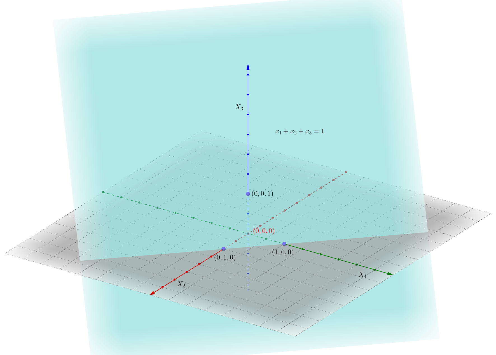
Suceso: \(\{X_1^2+X_2^2+X_3^2\leq 1\}\). Sería el interior de la esfera del gráfico siguiente:
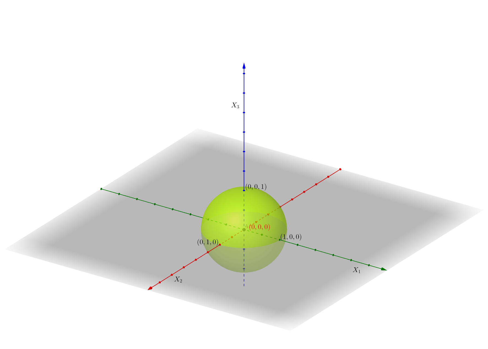
Suceso: \(\{0\leq X_1\leq 1,\ 0\leq X_2\leq 1,\ 0\leq X_3\leq 1\}\). Sería el interior del cubo del gráfico siguiente:
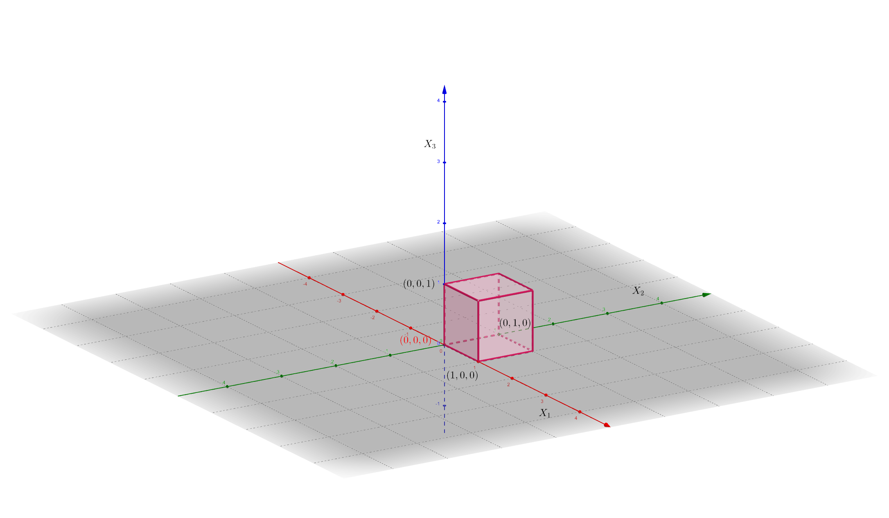
La probabilidad de que la variable \(n\)-dimensional pertenezca a una cierta región del \(n\)-espacio \(B\subset \mathbb{R}^n\) se define de la forma siguiente: \[ P((X_1,X_2,\ldots,X_n)\in B)=P\{w\in \Omega,\ |\ (X_1(w),X_2(w),\ldots,X_n)\in B\}, \] o sea, la probabilidad anterior es la probabilidad del suceso formado por los elementos de \(w\in\Omega\) que cumplen que su imagen por la variable aleatoria \(n\)-dimensional \((X_1,X_2,\ldots,X_n)\) esté en \(B\).
Por ejemplo, si consideramos \(B=\{X_1+X_2+\cdots +X_n\leq 1\}\), \(P((X_1,X_2,\ldots,X_n)\in B)\) sería la probabilidad del suceso formado por los elementos \(w\) de \(\Omega\) tal que la suma de las imágenes por \(X_i\) desde \(i=1\) hasta \(n\) sea menor o igual que 1: \(X_1(w)+\cdots +X_n\leq 1\).
6.2 Función de distribución conjunta
6.2.1 Definición
Dada una variable aleatoria \(n\)-dimensional \((X_1,X_2,\ldots,X_n)\), queremos estudiar cómo se distribuye la probabilidad de sucesos cualesquiera de la forma \(\{(X_1,X_2,\ldots,X_n)\in B\}\), donde \(B\) es una región del espació \(n\)-dimensional \(\mathbb{R}^n\).
Para ello, definimos la función de distribución conjunta:
O sea, dado un valor \((x_1,\ldots,x_n)\in \mathbb{R}^n\), consideramos la región del espacio \(n\)-dimensional \((-\infty,x_1]\times\cdots\times (-\infty,x_n]\).
Entonces la función de distribución conjunta en el valor \((x_1,\ldots,x_n)\) es la probabilidad del suceso formado por aquellos elementos tal que la imagen por la variable aleatoria \(n\)-dimensional \((X_1,X_2,\ldots,X_n)\) caen dentro de la región anterior:
\[ \begin{array}{rl} F_{X_1\ldots X_n}(x_1,\ldots,x_n) & =P\{w\in\Omega,\ |\ (X_1(w),\ldots,X_n(w)) \\ & \qquad\qquad\in (-\infty,x_1]\times\cdots\times (-\infty,x_n]\} \\ & = P\{w\in\Omega,\ |\ X_1(w)\leq x_1,\ldots, X_n(w)\leq x_n\}. \end{array} \]
El gráfico siguiente muestra el conjunto \((-\infty,x_1]\times (-\infty,x_2]\times (-\infty,x_3]\) en \(\mathbb{R}^3\) para un valor \((x,y,z)\):
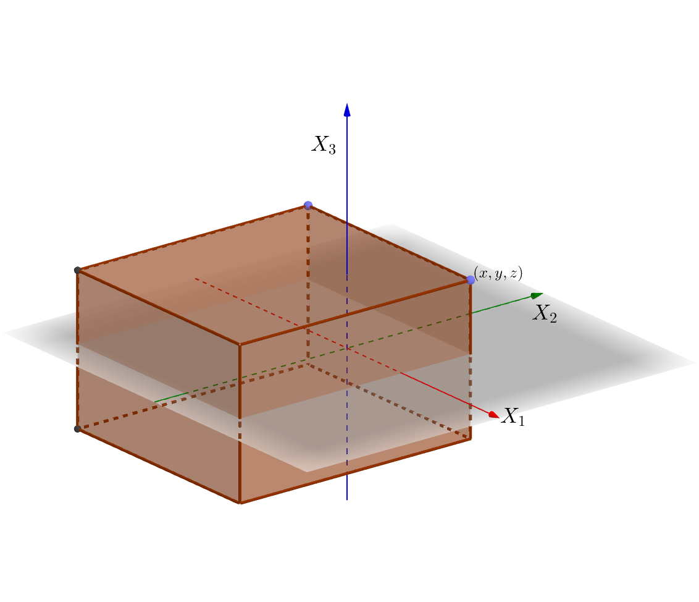
6.2.2 Propiedades
Sea \((X_1,X_2,\ldots,X_n)\) una variable \(n\)-dimensional. Sean \(F_{X_1\ldots X_n}\) su función de distribución conjunta. Dicha función satisface las propiedades siguientes:
La función de distribución conjunta es no decreciente en cada una de las variables: \[ \mbox{Si }x_i\leq x_i', \mbox{ para todo $i$, }\mbox{ entonces, }F_{X_1\ldots X_n}(x_1,\ldots,x_n)\leq F_{X_1\ldots X_n}(x_1',\ldots,x_n'). \]
\(F_{X_1\ldots X_n}(x_1,\ldots,x_{i-1},\stackrel{(i)}{-\infty},x_{i+1},\ldots,x_n)=0,\) para todo \(i\) y \(F_{X_1\ldots X_n}(\infty,\ldots,\infty)=1\), para todo \(x_1,\ldots,x_n\in\mathbb{R}\).
Las variables aleatorias \(X_1,\ldots, X_n\) se llaman variables aleatorias marginales y sus funciones de distribución \(F_{X_1},\ldots, F_{X_n}\) pueden hallarse de la forma siguiente como función de la función de distribución conjunta \(F_{X_1\ldots X_n}\): \[ F_{X_i}(x_i)=F_{X_1\ldots X_n}(\infty,\ldots,\infty,\stackrel{(i)}{x_i},\infty,\ldots,\infty), \] para todo \(x_1,\ldots,x_n\in\mathbb{R}\) y para todo \(i=1,\ldots,n\).
La función de distribución conjunta es continua por la derecha en todas las variables \(x_i\): \[ \begin{array}{rl} & \lim\limits_{x_i\to a^+}F_{X_1\ldots X_n}(x_1,\ldots,x_{i-1},\stackrel{(i)}{x_i},x_{i+1},\ldots,x_n) \\ &\qquad =\lim\limits_{x_i\to a, x_i> a}F_{X_1\ldots X_n}(x_1,\ldots,x_{i-1},\stackrel{(i)}{x_i},x_{i+1},\ldots,x_n)\\ &\qquad =F_{X_1\ldots X_n}(x_1,\ldots,x_{i-1},\stackrel{(i)}{a},x_{i+1},\ldots,x_n), \end{array} \] para todo \(a\in\mathbb{R}\) y para todo \(i=1,\ldots,n\).
6.2.3 Ejemplos
Ejemplo
Consideremos una variable aleatoria \(3\)-dimensional \((X_1,X_2,X_3)\) con función de distribución conjunta: \[ F_{X_1X_2X_3}(x_1,x_2,x_3)=\begin{cases} 0, & \mbox{si }x_1<0,\mbox{ o }x_2<0,\mbox{ o }x_3 <0\\ x_1^2\cdot x_2^2\cdot x_3^2, & \mbox{si }0\leq x_1\leq 1,\ 0\leq x_2\leq 1,\ 0\leq x_3\leq 1, \\ x_2^2\cdot x_3^2, & \mbox{si }x_1> 1,\ 0\leq x_2\leq 1,\ 0\leq x_3\leq 1, \\ x_1^2\cdot x_3^2, & \mbox{si }0\leq x_1\leq 1,\ x_2> 1,\ \ 0\leq x_3\leq 1, \\ x_3^2, & \mbox{si }x_1> 1,\ x_2> 1,\ \ 0\leq x_3\leq 1, \\ x_1^2\cdot x_2^2, & \mbox{si }0\leq x_1\leq 1,\ 0\leq x_2\leq 1,\ x_3> 1,\\ x_1^2, & \mbox{si }0\leq x_1\leq 1,\ x_2 > 1,\ x_3> 1,\\ x_2^2, & \mbox{si }x_1>1,\ 0\leq x_2\leq 1,\ x_3> 1,\\ 1, & \mbox{si }x_1\geq 1,\ x_2\geq 1,\ x_3\geq 1. \end{cases} \]
En las figuras siguientes, hemos representado por zonas cómo está definida \(F_{X_1X_2X_3}\).
La primera figura muestra las zonas en la “planta baja” o para \(0\leq x_3\leq 1\). En color marrón, está representada la región \(0\leq x_1\leq 1,\ 0\leq x_2\leq 1,\ 0\leq x_3\leq 1\), en color amarillo, la región \(x_1> 1,\ 0\leq x_2\leq 1,\ 0\leq x_3\leq 1\), en color verde, la región \(x_1>1,\ x_2>1,\ 0\leq x_3\leq 1\) y en color violeta, la región \(0\leq x_1\leq 1,\ x_2>1,\ 0\leq x_3\leq 1\).
La segunda figura muestra las zonas del “primer piso” o para \(x_3>1\). Los colores tienen un significado similar a los de la primera figura: en color marrón, está representada la región \(0\leq x_1\leq 1,\ 0\leq x_2\leq 1,\ x_3> 1\), en color amarillo u ocre, la región \(x_1> 1,\ 0\leq x_2\leq 1,\ x_3> 1\), en color verde, la región \(x_1>1,\ x_2>1,\ x_3> 1\) y en color violeta, la región \(0\leq x_1\leq 1,\ x_2>1,\ x_3> 1\).
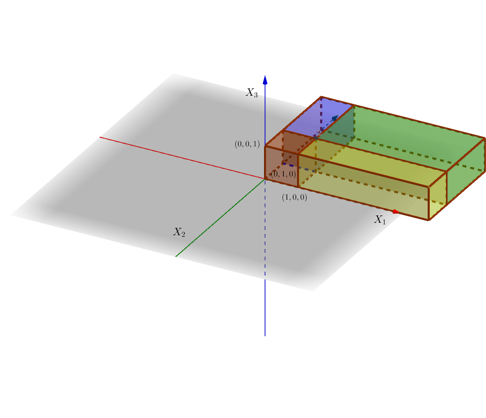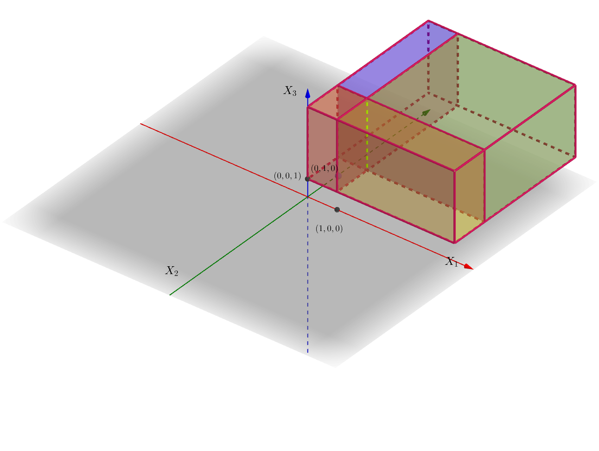
Comprobemos algunas de las propiedades que hemos enunciado anteriormente:
Claramente \(F_{X_1X_2X_3}(x_1,x_2,-\infty)=F_{X_1X_2X_3}(x_1,-\infty,x_3)=F_{X_1X_2X_3}(-\infty,x_2,x_3)=0\) ya que \(F_{X_1X_2X_3}(x_1,x_2,x_3)=0\) si \(x_1<0\) o \(x_2<0\) o \(x_3<0\). Por tanto, si hacemos tender \(x_1\) o \(x_2\) o \(x_3\) hacia \(-\infty\), obtendremos que \(F_{X_1X_2X_3}(x_1,x_2,-\infty)=F_{X_1X_2X_3}(x_1,-\infty,x_3)=F_{X_1X_2X_3}(-\infty,x_2,x_3)=0\).
De la misma manera \(F_{X_1X_2X_3}(\infty,\infty,\infty)=1\) ya que \(F_{X_1X_2X_3}(x_1,x_2,x_3)=1\) para \(x_1>1\), \(x_2>1\) y \(x_3>1\). Por tanto, si hacemos tender \(x_1\), \(x_2\) y \(x_3\) hacia \(\infty\), obtendremos \(F_{X_1X_2X_3}(\infty,\infty,\infty)=1\).
Hallemos las marginales: \[ F_{X_1}(x_1)=F_{X_1X_2X_3}(x_1,\infty,\infty)=\begin{cases} 0, & \mbox{ si }x_1 < 0,\\ x_1, & \mbox{ si } 0\leq x_1\leq 1,\\ 1, & \mbox{ si } x_1>1. \end{cases} \] Para ver la expresión anterior basta trazar el plano \(X_1=x_1\) en el gráfico anterior y ver hacia dónde tiende a medida que las variables \(x_2\) y \(x_3\) se van hacia \(\infty\).
¿Habéis averiguado cuál es la distribución de \(X_1\)?
¡Efectivamente!, \(X_1\) es la uniforme en el intervalo \((0,1)\).
Dejamos como ejercicio hallar la distribución marginal para las variables \(X_2\) e \(X_3\).
- Comprobemos que \(F_{X_1X_2X_3}\) es continua por la derecha para las variables \(x_1\), \(x_2\) y \(x_3\) en el punto \((1,1,1)\) que sería un punto problemático: \[ \begin{array}{rl} \lim_{x_1\to 1,x_1> 1} F_{X_1X_2X_3}(x_1,1,1) & =\lim_{x_1\to 1,x_1> 1} 1 = F_{X_1X_2X_3}(1,1,1),\\ \lim_{x_2\to 1,x_2> 1} F_{X_1X_2X_3}(1,x_2,1) & =\lim_{x_2\to 1,x_2> 1} 1 = F_{X_1X_2X_3}(1,1,1),\\ \lim_{x_3\to 1,x_3> 1} F_{X_1X_2X_3}(1,1,x_3) & =\lim_{x_3\to 1,x_3> 1} 1 = F_{X_1X_2X_3}(1,1,1). \end{array} \]
6.2.4 Ejemplo con R
Realizar un gráfico 3D de la función de distribución conjunta no es posible ya que deberíamos pasar a \(\mathbb{R}^4\).
Lo que sí es posible es dibujar las curvas de nivel de dicha función para un valor de \(x_3\) fijado.
El los gráficos siguientes dibujamos las curvas de nivel para \(x_3=0,0.5,1\) i \(x_3=1.5\).
Primero definimos la función y luego la dibujamos para \(x_1\) y \(x_2\) entre \(-1\) y \(3\):
f.dist.con = function(x1,x2,x3){ifelse(x1<0 | x2<0 | x3 <0,0,
ifelse(x1>=0 & x1<=1 & x2>=0 & x2<=1 & x3>=0 & x3<=1,x1^2*x2^2*x3^2,
ifelse(x1>1 & x2>=0 & x2<=1 & x3>=0 & x3<=1,x2^2*x3^2,
ifelse(x1>=0 & x1<=1 & x2>1 & x3>=0 & x3<=1,x1^2*x3^2,
ifelse(x1>=0 & x1<=1 & x2>=0 & x2<=1 & x3>1,x1^2*x2^2,
ifelse(x1>=0 & x1<=1 & x2 >1 & x3 >1,x1^2,
ifelse(x1>1 & x2 >=0 & x2<=1 & x3 >1,x2^2,
ifelse(x1>=0 & x1<=1 & x2>=0 & x2<=1 & x3 >1,x3^2,1))))))))}
x1=seq(from=-1,to=3,by=0.05)
x2=seq(from=-1,to=3,by=0.05)
curva.nivel.0=outer(x1,x2,f.dist.con,x3=0)
curva.nivel.0.5=outer(x1,x2,f.dist.con,x3=0.5)
curva.nivel.1=outer(x1,x2,f.dist.con,x3=1)
curva.nivel.1.5=outer(x1,x2,f.dist.con,x3=1.5)
image(x1,x2,curva.nivel.0)


Ejemplo del lanzamiento de un dado tres veces
Consideremos el experimento aleatorio que consiste en lanzar un dado tres veces.
El espacio \(\Omega\) de resultados será: \[ \Omega =\{(i,j,k),\ | i,j,k=1,2,3,4,5,6\}. \] En total tendremos \(6\cdot 6\cdot 6=6^3=216\) resultados posibles.
Consideremos la variable 3-dimensional \(\mathbf{X}=(X_1,X_2,X_3)\), donde \(X_1\) nos da el número de 1’s obtenidos, \(X_2\), el número de 2’s y \(X_3\), el número de 3’s.
El conjunto \(\mathbf{X}(\Omega)\) tiene en total 64 elementos ya que cada componente \(X_i\) puede tener en total 4 resultados: 0, 1, 2 o 3. Por tanto el conjunto total de resultados será: \(4\cdot 4\cdot 4=4^3=64\).
El valor de función de distribución conjunta en el resultado \((0,0,0)\) será: \[ F_{X_1X_2X_3}(0,0,0)=p(X_1\leq 0,\ X_2\leq 0,\ X_3\leq 0)=\frac{3^3}{6^3}=\left(\frac{1}{2}\right)^3 =0.125, \] ya que si \(X_1\leq 0\), \(X_2\leq 0\) y \(X_3\leq 0\), significa que no ha salido ni ningún 1, ni ningún 2 ni ningún 3. Sólo pueden salir 4’s, 5’s o 6’s y existen \(3\cdot 3\cdot 3=3^3=27\) posibilidades de que esto pase entre \(6^3=216\) posibilidades posibles.
6.3 Variables aleatorias \(n\)-dimensionales discretas
En la mayoría de los casos, dicho conjunto será un subconjunto de los enteros naturales.
Ejemplo
La variable aleatoria 3-dimensional anterior que nos daba el número de 1’s obtenidos, el número de 2’s y el número de 3’s es discreta ya que \[ \begin{array}{rl} \mathbf{X}(\Omega)=\{& (0,0,0),(1,0,0),(0,1,0),(0,0,1),(2,0,0),(0,2,0),(0,0,2),(3,0,0),(0,3,0),(0,0,3), \\ & (0,1,1),(1,0,1),(1,1,0),(0,1,2),(0,2,1),(1,0,2),(2,0,1),(1,2,0),(2,1,0),(0,1,3), \\ & (0,3,1),(1,0,3),(3,0,1),(1,3,0),(3,1,0),(0,2,2),(2,0,2),(2,2,0),(0,2,3),(3,2,0),\\ & (2,0,3),(3,0,2),(2,3,0),(3,2,0),(0,3,3),(3,0,3),(3,3,0),(1,1,1),(1,1,2),(1,2,1),\\ & (2,1,1),(1,1,3),(1,3,1),(3,1,1),(1,2,2),(2,1,2),(2,2,1),(1,2,3),(2,1,3),(1,3,2),\\ & (3,1,2),(2,3,1),(3,2,1),(1,3,3),(3,1,3),(3,3,1),(2,2,2),(2,2,3),(2,3,2),(3,2,2)\\ & (2,3,3),(3,2,3),(3,3,2),(3,3,3)\}. \end{array} \]
6.3.1 Función de probabilidad conjunta
Por tanto, de cara a calcular \(P_{X_1\ldots X_n}\) basta calcular \(P_{X_1\ldots X_n}(x_{i_1},\ldots,x_{i_n})\) para \((x_{i_1},\ldots,x_{i_n})\in (X_1\ldots,X_n)(\Omega)\).
Los valores de \(P_{X_1\ldots X_n}(x_{i_1},\ldots,x_{i_n})\) estarían organizados en una tabla \(n\)-dimensional.
6.3.1.1 Ejemplo
Ejemplo de la variable 3-dimensional que nos da el número de 1’s, 2’s y 3’s en el lanzamiento de un dado tres veces
Para mostrar la función de probabilidad conjunta haremos una tabla bidimensional para cada valor de \(X_3\).
Como \(X_3(\Omega)=\{0,1,2,3\}\), en total mostraremos 4 tablas bidimensionales.
Tabla para \(X_3=0\):
| \(X_1/X_2\) | 0 | 1 | 2 | 3 |
|---|---|---|---|---|
| 0 | \(\frac{1}{8}\) | \(\frac{1}{8}\) | \(\frac{1}{24}\) | \(\frac{1}{216}\) |
| 1 | \(\frac{1}{8}\) | \(\frac{1}{12}\) | \(\frac{1}{72}\) | \(0\) |
| 2 | \(\frac{1}{24}\) | \(\frac{1}{72}\) | \(0\) | \(0\) |
| 3 | \(\frac{1}{216}\) | \(0\) | \(0\) | \(0\) |
Tabla para \(X_3=1\):
| \(X_1/X_2\) | 0 | 1 | 2 | 3 |
|---|---|---|---|---|
| 0 | \(\frac{1}{8}\) | \(\frac{1}{12}\) | \(\frac{1}{72}\) | \(0\) |
| 1 | \(\frac{1}{12}\) | \(\frac{1}{36}\) | \(0\) | \(0\) |
| 2 | \(\frac{1}{72}\) | \(0\) | \(0\) | \(0\) |
| 3 | \(0\) | \(0\) | \(0\) | \(0\) |
Tabla para \(X_3=2\):
| \(X_1/X_2\) | 0 | 1 | 2 | 3 |
|---|---|---|---|---|
| 0 | \(\frac{1}{24}\) | \(\frac{1}{72}\) | \(0\) | \(0\) |
| 1 | \(\frac{1}{72}\) | \(0\) | \(0\) | \(0\) |
| 2 | \(0\) | \(0\) | \(0\) | \(0\) |
| 3 | \(0\) | \(0\) | \(0\) | \(0\) |
Tabla para \(X_3=3\):
| \(X_1/X_2\) | 0 | 1 | 2 | 3 |
|---|---|---|---|---|
| 0 | \(\frac{1}{216}\) | \(0\) | \(0\) | \(0\) |
| 1 | \(0\) | \(0\) | \(0\) | \(0\) |
| 2 | \(0\) | \(0\) | \(0\) | \(0\) |
| 3 | \(0\) | \(0\) | \(0\) | \(0\) |
6.3.1.2 Ejemplo con R
La función fun.prod.con nos da la función de probabilidad conjunta de la variable aleatoria \(\mathbf{X}\) cuando lanzamos un dado tres veces:
fun.prob.con=function(x1,x2,x3){
n=6
cuenta.1 =function(x){length(x[x==1])}
cuenta.2 =function(x){length(x[x==2])}
cuenta.3 =function(x){length(x[x==3])}
Dxyz=data.frame(d1=rep(1:n,each=n),d2=rep(1:n,times=n),d3=rep(1:n,each=n*n))
X1=apply(Dxyz,1,cuenta.1)
X2=apply(Dxyz,1,cuenta.2)
X3=apply(Dxyz,1,cuenta.3)
frecuencia = table(X1==x1 & X2==x2 & X3==x3)
res=ifelse(length(frecuencia)==2,frecuencia[2],0)
return(res/6^3)
}Para construir la tabla de la función de probabilidad conjunta para la variable \(\mathbf{X}=(X_1,X_2,X_3)\) con \(X_3=0\) hacemos lo siguiente:
valores.variables=0:3
tabla.0 = c()
for (i in 1:length(valores.variables)){for (j in 1:length(valores.variables)){
tabla.0=c(tabla.0,fun.prob.con(valores.variables[i],valores.variables[j],0));
}}
tabla.0 = matrix(tabla.0,length(valores.variables),length(valores.variables))
rownames(tabla.0)=valores.variables
colnames(tabla.0)=valores.variables
knitr::kable(tabla.0)Con los demás valores de \(X_3\), lo haríamos de forma similar.
Tabla con \(X_3=0\):
| 0 | 1 | 2 | 3 | |
|---|---|---|---|---|
| 0 | 0.1250000 | 0.1250000 | 0.0416667 | 0.0046296 |
| 1 | 0.1250000 | 0.0833333 | 0.0138889 | 0.0000000 |
| 2 | 0.0416667 | 0.0138889 | 0.0000000 | 0.0000000 |
| 3 | 0.0046296 | 0.0000000 | 0.0000000 | 0.0000000 |
Tabla con \(X_3=1\):
| 0 | 1 | 2 | 3 | |
|---|---|---|---|---|
| 0 | 0.1250000 | 0.0833333 | 0.0138889 | 0 |
| 1 | 0.0833333 | 0.0277778 | 0.0000000 | 0 |
| 2 | 0.0138889 | 0.0000000 | 0.0000000 | 0 |
| 3 | 0.0000000 | 0.0000000 | 0.0000000 | 0 |
Tabla con \(X_3=2\):
| 0 | 1 | 2 | 3 | |
|---|---|---|---|---|
| 0 | 0.0416667 | 0.0138889 | 0 | 0 |
| 1 | 0.0138889 | 0.0000000 | 0 | 0 |
| 2 | 0.0000000 | 0.0000000 | 0 | 0 |
| 3 | 0.0000000 | 0.0000000 | 0 | 0 |
Tabla con \(X_3=3\):
| 0 | 1 | 2 | 3 | |
|---|---|---|---|---|
| 0 | 0.0046296 | 0 | 0 | 0 |
| 1 | 0.0000000 | 0 | 0 | 0 |
| 2 | 0.0000000 | 0 | 0 | 0 |
| 3 | 0.0000000 | 0 | 0 | 0 |
6.3.2 Propiedades de la función de probabilidad conjunta
Sea \((X_1\ldots,X_n)\) una variable aleatoria \(n\)-dimensional discreta con conjunto de valores \((X_1\ldots,X_n)(\Omega)=\{(x_{i_1},\ldots,x_{i_n})\, i_1=1,\ldots,\ i_n=1,\ldots\}\). Entonces su función de probabilidad conjunta verifica las propiedades siguientes:
La suma de todos los valores de la función de probabilidad conjunta sobre el conjunto de valores siempre vale 1: \[\sum_{i_1}\cdots\sum_{i_n} P_{X_1\ldots X_n}(x_{i_1},\ldots,x_{i_n})=1.\]
Sea \(B\) una región del espacio \(\mathbb{R}^n\). El valor de la probabilidad \(P((X_1\ldots,X_n)\in B)\) se puede calcular de la forma siguiente: \[ P((X_1\ldots,X_n)\in B) =\sum_{(x_{i_1},\ldots,x_{i_n})\in B} P_{X_1\ldots X_n}(x_{i_1},\ldots,x_{i_n}). \] O sea, la probabilidad de que la variable \(n\)-dimensional coja valores en \(B\) es igual a la suma de todos aquellos valores de la función de probabilidad conjunta que están en \(B\).
En particular, tenemos la relación siguiente que relaciona la función de distribución conjunta con la función de probabilidad conjunta: \[ F_{X_1\ldots X_n}(x_1,\ldots,x_n)=\sum_{x_{i_1}\leq x_1,\ldots, x_{i_n}\leq x_n} P_{X_1\ldots X_n}(x_{i_1},\ldots,x_{i_n}). \] Dicha expresión se deduce de la expresión anterior considerando \(B=(-\infty,x_1]\times\cdots\times (-\infty,x_n]\).
6.3.2.1 Ejemplos
Ejemplo anterior del lanzamiento de un dado tres veces
Ejercicio
Comprobad usando la tabla de la función de probabilidad conjunta que la suma de todos sus valores suma 1.
Apliquemos la fórmula que relaciona la función de distribución conjunta con la función de probabilidad conjunta para \((x_1,x_2,x_3)=(1,2,2)\).
Observamos que los únicos valores \((x_{i_1},x_{i_2},x_{i_3})\in (X_1 X_2,X_3)(\Omega)\) que verifican \(x_{i_1}\leq 1\), \(x_{i_2}\leq 2\) y \(x_{i_3}\leq 2\) son \((0,0,0)\), \((0,0,1)\), \((0,0,2)\), \((0,1,0)\), \((0,1,1)\), \((0,1,2)\), \((0,2,0)\), \((0,2,1)\), \((0,2,2)\), \((1,0,0)\), \((1,0,1)\), \((1,0,2)\), \((1,1,0)\), \((1,1,1)\), \((1,1,2)\), \((1,2,0)\), \((1,2,1)\) y \((1,2,2)\):
\[ \begin{array}{rl} F_{X_1X_2X_3}(1,2,2) & =P_{X_1X_2X_3}(0,0,0)+P_{X_1X_2X_3}(0,0,1)+P_{X_1X_2X_3}(0,0,2)+P_{X_1X_2X_3}(0,1,0)\\ & +P_{X_1X_2X_3}(0,1,1)+P_{X_1X_2X_3}(0,1,2)+P_{X_1X_2X_3}(0,2,0)+P_{X_1X_2X_3}(0,2,1)\\ & +P_{X_1X_2X_3}(0,2,2) + P_{X_1X_2X_3}(1,0,0)+P_{X_1X_2X_3}(1,0,1)+P_{X_1X_2X_3}(1,0,2)\\ & +P_{X_1X_2X_3}(1,1,0)+P_{X_1X_2X_3}(1,1,1)+ P_{X_1X_2X_3}(1,1,2)+P_{X_1X_2X_3}(1,2,0)\\ & + P_{X_1X_2X_3}(1,2,1)+P_{X_1X_2X_3}(1,2,2)\\ &= \frac{1}{8}+\frac{1}{8}+\frac{1}{24}+\frac{1}{8}+\frac{1}{12}+\frac{1}{72}+\frac{1}{24}+\frac{1}{72}+0+\frac{1}{8}+\frac{1}{12}+\frac{1}{72}+\frac{1}{12}+\frac{1}{36}\\ & +0+\frac{1}{72}+0+0=\frac{11}{12}=0.9167. \end{array} \]
La función de distribución conjunta sería en R:
fun.dis.con = function(x1,x2,x3){
suma=0
i1=0; i2=0; i3=0;
while(i1 <=x1 & i1<=3){
while(i2 <= x2 & i2<=3){
while(i3<= x3 & i3 <=3){
suma=suma+fun.prob.con(i1,i2,i3); i3=i3+1;
}
i3=0; i2=i2+1;
}
i2=0; i3=0; i1=i1+1;
}
return(suma)
}Comprobemos que la función de distribución conjunta en el valor \((1,2,2)\) nos da el mismo resultado que vimos anteriormente:
## [1] 0.91666676.3.3 Variables aleatorias marginales
Consideremos una variable aleatoria \(n\)-dimensional discreta \((X_1\ldots,X_n)\) con función de probabilidad conjunta \(P_{X_1\ldots,X_n}(x_{i_1},\ldots,x_{i_n})\), con \((x_{i_1},\ldots,x_{i_n})\in (X_1\ldots,X_n)(\Omega)\), \(i_1=1,2,\ldots\), \(i_n=1,2,\ldots\).
La tabla de la función de probabilidad conjunta contiene suficiente información para obtener las funciones de probabilidad conjunta de cualquier variable aleatoria \(k\)-dimensional \((X_{s_1},\ldots,X_{s_k})\) donde \(\{s_1,\ldots,s_k\}\) es un subconjunto de las componentes \(\{1,\ldots,n\}\) de la variable aleatoria \(n\)-dimensional. .
Sea \(\{s_1,\ldots,s_k\}\) un subconjunto del conjunto de las componentes \(\{1,\ldots,n\}\) donde suponemos que \(s_1 < s_2<\cdots < s_k\). Entonces la función de probabilidad conjunta \(P_{X_{s_1}\ldots X_{s_k}}\) de la variable aleatoria \(k\)-dimensional \((X_{s_1},\ldots, X_{s_k})\) se calcula usando la expresión siguiente: \[ \begin{array}{rl} P_{X_{s_1}\ldots X_{s_k}}(x_{s_1},\ldots,x_{s_k}) & = \sum_{x_t} P_{X_1\ldots X_n}(\mathbf{x}_s,\mathbf{x}_t), \end{array} \]
donde \((\mathbf{x}_s,\mathbf{x}_t)\) es un valor de \(\mathbf{X}(\Omega)\) tal que tiene como componente \(s_i\) el valor \(x_{s_i}\) para \(i=1,\ldots, k\) y con \(\mathbf{x}_t\) queremos decir todas las demás componentes que no son las \(s_i\). La suma tiene todos los sumandos \(\mathbf{x}_t\) para los que se cumpla que \((\mathbf{x}_s,\mathbf{x}_t)\in \mathbf{X}(\Omega)\).
En el caso particular de \(n=3\), podemos calcular las funciones de probabilidad conjunta de las variables unidimensionales \(X_1\), \(X_2\) y \(X_3\) y de las variables bidimensionales \((X_1,X_2)\), \((X_1,X_3)\) y \((X_2,X_3)\).
6.3.3.1 Ejemplos
Ejemplo de la variable 3-dimensional que nos da el número de 1’s, 2’s y 3’s en el lanzamiento de un dado tres veces
Hallemos, en primer lugar, la función de probabilidad marginal de las variable \(X_1\), \(X_2\) y \(X_3\). Empecemos con \(X_1\): \[ \begin{array}{rl} P_{X_1}(0) & = P_{X_1X_2X_3}(0,0,0)+P_{X_1X_2X_3}(0,0,1)+P_{X_1X_2X_3}(0,0,2)+P_{X_1X_2X_3}(0,0,3)+P_{X_1X_2X_3}(0,1,0) \\ & +P_{X_1X_2X_3}(0,1,1)+P_{X_1X_2X_3}(0,1,2)+P_{X_1X_2X_3}(0,1,3)+P_{X_1X_2X_3}(0,2,0)+P_{X_1X_2X_3}(0,2,1)\\ & +P_{X_1X_2X_3}(0,2,2)+P_{X_1X_2X_3}(0,2,3)+P_{X_1X_2X_3}(0,3,0)+P_{X_1X_2X_3}(0,3,1)+P_{X_1X_2X_3}(0,3,2)\\ & P_{X_1X_2X_3}(0,3,3)=0.5787,\\ P_{X_1}(1) & = P_{X_1X_2X_3}(1,0,0)+P_{X_1X_2X_3}(1,0,1)+P_{X_1X_2X_3}(1,0,2)+P_{X_1X_2X_3}(1,0,3)+P_{X_1X_2X_3}(1,1,0) \\ & +P_{X_1X_2X_3}(1,1,1)+P_{X_1X_2X_3}(1,1,2)+P_{X_1X_2X_3}(1,1,3)+P_{X_1X_2X_3}(1,2,0)+P_{X_1X_2X_3}(1,2,1)\\ & +P_{X_1X_2X_3}(1,2,2)+P_{X_1X_2X_3}(1,2,3)+P_{X_1X_2X_3}(1,3,0)+P_{X_1X_2X_3}(1,3,1)+P_{X_1X_2X_3}(1,3,2)\\ & P_{X_1X_2X_3}(1,3,3)=0.3472,\\ \end{array} \]
\[ \begin{array}{rl} P_{X_1}(2) & = P_{X_1X_2X_3}(2,0,0)+P_{X_1X_2X_3}(2,0,1)+P_{X_1X_2X_3}(2,0,2)+P_{X_1X_2X_3}(2,0,3)+P_{X_1X_2X_3}(2,1,0) \\ & +P_{X_1X_2X_3}(2,1,1)+P_{X_1X_2X_3}(2,1,2)+P_{X_1X_2X_3}(2,1,3)+P_{X_1X_2X_3}(2,2,0)+P_{X_1X_2X_3}(2,2,1)\\ & +P_{X_1X_2X_3}(2,2,2)+P_{X_1X_2X_3}(2,2,3)+P_{X_1X_2X_3}(2,3,0)+P_{X_1X_2X_3}(2,3,1)+P_{X_1X_2X_3}(2,3,2)\\ & P_{X_1X_2X_3}(2,3,3)=0.0694,\\ P_{X_1}(3) & = P_{X_1X_2X_3}(3,0,0)+P_{X_1X_2X_3}(3,0,1)+P_{X_1X_2X_3}(3,0,2)+P_{X_1X_2X_3}(3,0,3)+P_{X_1X_2X_3}(3,1,0) \\ & +P_{X_1X_2X_3}(3,1,1)+P_{X_1X_2X_3}(3,1,2)+P_{X_1X_2X_3}(3,1,3)+P_{X_1X_2X_3}(3,2,0)+P_{X_1X_2X_3}(3,2,1)\\ & +P_{X_1X_2X_3}(3,2,2)+P_{X_1X_2X_3}(3,2,3)+P_{X_1X_2X_3}(3,3,0)+P_{X_1X_2X_3}(3,3,1)+P_{X_1X_2X_3}(3,3,2)\\ & P_{X_1X_2X_3}(3,3,3)=0.0046 \end{array} \]
La distribución marginal de la variable \(X_1\) es la siguiente:
| \(X_1\) | 0 | 1 | 2 | 3 |
|---|---|---|---|---|
| \(P_{X_1}\) | \(0.5787\) | \(0.3472\) | \(0.0694\) | \(0.0046\) |
Las distribuciones marginales de las variables \(X_2\) y \(X_3\) coinciden con la distribución marginal de la variable \(X_1\). Lo dejamos como ejercicio.
A continuación, calculemos la función de probabilidad marginal conjunta de la variable \((X_1,X_2)\): \[ \begin{array}{rl} P_{X_1X_2}(0,0) & = P_{X_1X_2X_3}(0,0,0)+P_{X_1X_2X_3}(0,0,1)+P_{X_1X_2X_3}(0,0,2)+P_{X_1X_2X_3}(0,0,3)=0.2963, \\ P_{X_1X_2}(0,1) & = P_{X_1X_2X_3}(0,1,0)+P_{X_1X_2X_3}(0,1,1)+P_{X_1X_2X_3}(0,1,2)+P_{X_1X_2X_3}(0,1,3)=0.2222, \\ P_{X_1X_2}(0,2) & = P_{X_1X_2X_3}(0,2,0)+P_{X_1X_2X_3}(0,2,1)+P_{X_1X_2X_3}(0,2,2)+P_{X_1X_2X_3}(0,2,3)=0.0556, \\ P_{X_1X_2}(0,3) & = P_{X_1X_2X_3}(0,3,0)+P_{X_1X_2X_3}(0,3,1)+P_{X_1X_2X_3}(0,3,2)+P_{X_1X_2X_3}(0,3,3)=0.0046, \\ P_{X_1X_2}(1,0) & = P_{X_1X_2X_3}(1,0,0)+P_{X_1X_2X_3}(1,0,1)+P_{X_1X_2X_3}(1,0,2)+P_{X_1X_2X_3}(1,0,3)=0.2222, \\ P_{X_1X_2}(1,1) & = P_{X_1X_2X_3}(1,1,0)+P_{X_1X_2X_3}(1,1,1)+P_{X_1X_2X_3}(1,1,2)+P_{X_1X_2X_3}(1,1,3)=0.1111, \\ P_{X_1X_2}(1,2) & = P_{X_1X_2X_3}(1,2,0)+P_{X_1X_2X_3}(1,2,1)+P_{X_1X_2X_3}(1,2,2)+P_{X_1X_2X_3}(1,2,3)=0.0139, \\ P_{X_1X_2}(1,3) & = P_{X_1X_2X_3}(1,3,0)+P_{X_1X_2X_3}(1,3,1)+P_{X_1X_2X_3}(1,3,2)+P_{X_1X_2X_3}(1,3,3)=0, \\ P_{X_1X_2}(2,0) & = P_{X_1X_2X_3}(2,0,0)+P_{X_1X_2X_3}(2,0,1)+P_{X_1X_2X_3}(2,0,2)+P_{X_1X_2X_3}(2,0,3)=0.0556, \\ P_{X_1X_2}(2,1) & = P_{X_1X_2X_3}(2,1,0)+P_{X_1X_2X_3}(2,1,1)+P_{X_1X_2X_3}(2,1,2)+P_{X_1X_2X_3}(2,1,3)=0.0139, \\ P_{X_1X_2}(2,2) & = P_{X_1X_2X_3}(2,2,0)+P_{X_1X_2X_3}(2,2,1)+P_{X_1X_2X_3}(2,2,2)+P_{X_1X_2X_3}(2,2,3)=0, \\ P_{X_1X_2}(2,3) & = P_{X_1X_2X_3}(2,3,0)+P_{X_1X_2X_3}(2,3,1)+P_{X_1X_2X_3}(2,3,2)+P_{X_1X_2X_3}(2,3,3)=0, \\ \end{array} \]
\[ \begin{array}{rl} P_{X_1X_2}(3,0) & = P_{X_1X_2X_3}(3,0,0)+P_{X_1X_2X_3}(3,0,1)+P_{X_1X_2X_3}(3,0,2)+P_{X_1X_2X_3}(3,0,3)=0.0046, \\ P_{X_1X_2}(3,1) & = P_{X_1X_2X_3}(3,1,0)+P_{X_1X_2X_3}(3,1,1)+P_{X_1X_2X_3}(3,1,2)+P_{X_1X_2X_3}(3,1,3)=0, \\ P_{X_1X_2}(3,2) & = P_{X_1X_2X_3}(3,2,0)+P_{X_1X_2X_3}(3,2,1)+P_{X_1X_2X_3}(3,2,2)+P_{X_1X_2X_3}(3,2,3)=0, \\ P_{X_1X_2}(3,3) & = P_{X_1X_2X_3}(3,3,0)+P_{X_1X_2X_3}(3,3,1)+P_{X_1X_2X_3}(3,3,2)+P_{X_1X_2X_3}(3,3,3)=0, \\ \end{array} \]
La función de probabilidad marginal conjunta de la variable \((X_1,X_2)\) queda resumida en la tabla siguiente:
| \(X_1/X_2\) | 0 | 1 | 2 | 3 |
|---|---|---|---|---|
| \(0\) | \(0.2963\) | \(0.2222\) | \(0.0556\) | \(0.0046\) |
| \(1\) | \(0.2222\) | \(0.1111\) | \(0.0139\) | \(0\) |
| \(2\) | \(0.0556\) | \(0.0139\) | \(0\) | \(0\) |
| \(3\) | \(0.0046\) | \(0\) | \(0\) | \(0\) |
Las funciones de probabilidad marginales de las variables \((X_1,X_3)\) y \((X_2,X_3)\) dan el mismo resultado que la tabla anterior.
La función de probabilidad marginal de la variable \(X_1\) en R se halla de la forma siguiente:
fun.marginal.X1 = function(x){
suma=0;
for (i in 0:3){for (j in 0:3){suma=suma+fun.prob.con(x,i,j)}}
return(suma)
}
tabla.fun.marginal.X1=data.frame(fun.marginal.X1(0),fun.marginal.X1(1),
fun.marginal.X1(2),fun.marginal.X1(3));
colnames(tabla.fun.marginal.X1)=0:3
knitr::kable(tabla.fun.marginal.X1)| 0 | 1 | 2 | 3 |
|---|---|---|---|
| 0.5787037 | 0.3472222 | 0.0694444 | 0.0046296 |
La función de probabilidad marginal de la variable \((X_1,X_2)\) en R se halla de la forma siguiente:
fun.marginal.X1.X2 = function(x,y){
suma=0;
for (i in 0:3){suma=suma+fun.prob.con(x,y,i)}
return(suma)
}
tabla.fun.marginal.X1.X2=c()
for (i in 0:3){
tabla.fun.marginal.X1.X2=cbind(tabla.fun.marginal.X1.X2,c(fun.marginal.X1.X2(i,0),
fun.marginal.X1.X2(i,1),
fun.marginal.X1.X2(i,2),
fun.marginal.X1.X2(i,3)))}
tabla.fun.marginal.X1.X2=as.data.frame(tabla.fun.marginal.X1.X2)
rownames(tabla.fun.marginal.X1.X2)=0:3
colnames(tabla.fun.marginal.X1.X2)=0:3
knitr::kable(tabla.fun.marginal.X1.X2)| 0 | 1 | 2 | 3 | |
|---|---|---|---|---|
| 0 | 0.2962963 | 0.2222222 | 0.0555556 | 0.0046296 |
| 1 | 0.2222222 | 0.1111111 | 0.0138889 | 0.0000000 |
| 2 | 0.0555556 | 0.0138889 | 0.0000000 | 0.0000000 |
| 3 | 0.0046296 | 0.0000000 | 0.0000000 | 0.0000000 |
lo cual concluye nuestros cálculos con R.
6.4 Variables aleatorias \(n\)-dimensionales continuas
6.4.1 Definición
Recordemos la definición de variable continua bidimensional: \((X,Y)\) es continua si existe una función \(f_{XY}:\mathbb{R}^2\longrightarrow \mathbb{R}\), llamada función de densidad conjunta no negativa \(f_{XY}(x,y)\geq 0\), para todo \((x,y)\in\mathbb{R}^2\) tal que para cualquier región \(B\) del plano, la probabilidad de que \((X,Y)\) esté en \(B\) se calcula de la forma siguiente: \[ P((X,Y)\in B)=\int\int_B f_{XY}(x,y)\,dx\, dy. \]
La generalización natural será, entonces:
6.4.1.1 Ejemplos
Ejemplo
Consideremos una variable aleatoria \(3\)-dimensional \((X_1,X_2,X_3)\) con función de densidad conjunta: \[ f_{X_1X_2X_3}(x_1,x_2,x_3)=\begin{cases} 8 x_1\cdot x_2\cdot x_3, & \mbox{si }0\leq x_1\leq 1,\ 0\leq x_2\leq 1,\ 0\leq x_3\leq 1, \\ 0, & \mbox{en caso contrario.}\\ \end{cases} \]
En la figura siguiente hemos dibujado en rosa la región donde \(f_{X_1X_2X_3}\) no es cero, o sea \([0,1]\times [0,1]\times [0,1]\).
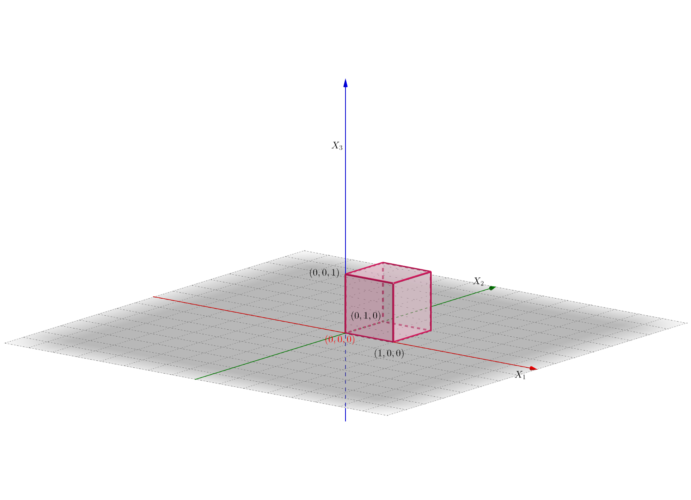
6.4.2 Propiedades de la función de densidad
Sea \((X_1\ldots,X_n)\) una variable aleatoria \(n\)-dimensional continua con función de densidad conjunta \(f_{X_1\ldots X_n}\). Entonces dicha función verifica las propiedades siguientes:
La integral de dicha función sobre todo el espacio \(n\)-dimensional vale 1: \[ \int\int_{\mathbb{R}^n} f_{X_1\ldots X_n}(x_1,\ldots,x_n)\,dx_1\cdots dx_n =1. \] Para ver dicha propiedad, basta considerar \(B=\mathbb{R}^n\), tener en cuenta que el suceso \((X_1\ldots,X_n)\in \mathbb{R}^n\) es el total \(\Omega\) y aplicar la definición de \(f_{X_1\ldots X_n}\): \[ P((X_1\ldots,X_n)\in \mathbb{R}^n)=1= \int\cdots\int_{\mathbb{R}^n} f_{X_1\ldots X_n}(x_1,\ldots,x_n)\,dx_1\cdots dx_n. \]
La relación que hay entre la función de distribución conjunta \(F_{X_1\ldots X_n}\) y la función de densidad conjunta \(f_{X_1\ldots X_n}\) es la siguiente: \[ F_{X_1\ldots X_n}(x_1,\ldots,x_n)=\int_{-\infty}^{x_1}\cdots\int_{-\infty}^{x_n} f_{X_1\ldots X_n}(u_1,\ldots,u_n)\,du_1\cdots du_n. \] Para ver dicha propiedad, basta considerar \(B=(-\infty,x_1]\times\cdots\times (-\infty,x_n]\) y aplicar la definición de función de distribución conjunta: \[ \begin{array}{rl} & F_{X_1\ldots X_n}(x_1,\ldots,x_n)=P((X_1\ldots,X_n)\in (-\infty,x_1]\times\cdots (-\infty,x_n])\\ &\qquad =\int_{-\infty}^{x_1}\cdots\int_{-\infty}^{x_n} f_{X_1\ldots X_n}(u_1,\ldots,u_n)\,du_1\cdots du_n. \end{array} \]
La relación que hay entre la función de densidad \(F_{X_1\ldots X_n}\) y la función de distribución \(f_{X_1\ldots X_n}\) es la siguiente: \[ f_{X_1\ldots X_n}(x_1,\ldots,x_n)=\frac{\partial^n F_{X_1\ldots X_n}(x_1,\ldots,x_n)}{\partial x_1\cdots\partial x_n}. \] Dicha propiedad se deduce de la anterior, derivando primero respecto a \(x_1\), después respecto a \(x_2\) y sucesivamente hasta llegar a \(x_n\) para eliminar las \(n\) integrales.
La función de densidad marginal de la variable \(k\) dimensional \((X_{s_1},\ldots,X_{s_k})\) con \(\{s_1,\ldots, s_k\}\) un subconjunto de \(\{1,\ldots,n\}\), \(f_{X_{s_1}\ldots,X_{s_k}}\) se calculan de la forma siguiente: \[ f_{X_{s_1}\ldots,X_{s_k}}(x_{s_1},\ldots,x_{s_k})=\int_{x_{t_1}=-\infty}^{x_{t_1}=\infty}\cdots \int_{x_{t_{n-k}}=-\infty}^{x_{t_{n-k}}=\infty} f_{X_1\ldots X_n}(x_1,\ldots,x_n)\, dx_{t_1}\cdots dx_{t_{n-k}}, \] con \(\{t_1,\ldots,t_{n-k}\}=\{1,\ldots,n\}\setminus \{s_1,\ldots,s_k\}.\) O sea, las variables \(t\)’s son las que no aparecen en la definición de la variable aleatoria \(k\) dimensional \((X_{s_1},\ldots,X_{s_k})\).
6.4.2.1 Ejemplos
Ejemplo anterior
Comprobemos las propiedades usando la función de densidad del ejemplo anterior: \[ f_{X_1X_2X_3}(x_1,x_2,x_3)=\begin{cases} 8 x_1\cdot x_2\cdot x_3, & \mbox{si }0\leq x_1\leq 1,\ 0\leq x_2\leq 1,\ 0\leq x_3\leq 1, \\ 0, & \mbox{en caso contrario.}\\ \end{cases} \]
La integral de \(f_{X_1X_2X_3}\) sobre todo el espacio 3D vale 1: \[ \begin{array}{rl} & \int\int\int_{\mathbb{R}^3} f_{X_1X_2X_3}(x_1,x_2,x_3)\,dx\, dy=\int_0^1\int_0^1\int_0^1 8 x_1\cdot x_2\cdot x_3\, dx_1\,dx_2\,dx_3\\ & \qquad=8\int_0^1 x_1\, dx_1\int_0^1 x_2\, dx_2\int_0^1 x_3\,dx_3=8\left[\frac{x_1^2}{2}\right]_0^1\cdot\left[\frac{x_2^2}{2}\right]_0^1\cdot \left[\frac{x_3^2}{2}\right]_0^1=8\cdot\left(\frac{1}{2}\right)^3 =1. \end{array} \]
Vamos a calcular la función de distribución \(F_{X_1X_2X_3}\).
Recordemos que la expresión de la función de distribución en función de la función de densidad era: \[ F_{X_1X_2X_3}(x_1,x_2,x_3)=\int_{-\infty}^{x_1}\int_{-\infty}^{x_2}\int_{-\infty}^{x_3}f_{X_1X_2X_3}(u_1,u_2,u_3)\,du_1\, du_2\, du_3. \] Como la región del espacio 3D donde \(f_{X_1X_2X_3}(x_1,x_2,x_3)\) es no nula es el cubo unidad \([0,1]\times [0,1]\times [0,1]\), fijado un punto del espacio \((x_1,x_2,x_3)\) será fundamental calcular la intersección de dicho cubo unidad con la región \((-\infty,x_1]\times (-\infty,x_2]\times (-\infty,x_3]\).
Dicha intersección \(([0,1]\times [0,1]\times [0,1])\cap ((-\infty,x_1]\times (-\infty,x_2]\times (-\infty,x_3])\) será la región donde tendremos que integrar la función de densidad para hallar la función de distribución en el punto \((x_1,x_2,x_3)\).
Para hallar la región anterior, vamos a dividir el espacio 3D en tres “pisos”:
- “Sótano” o zona donde \(x_3<0\).
- “Planta baja” o zona donde \(0\leq x_3\leq 1\).
“Primer piso” o zona donde \(x_3>1\).
Si \((x_1,x_2,x_3)\) está en el “sótano” o \(x_3<0\), claramente, \(([0,1]\times [0,1]\times [0,1])\cap ((-\infty,x_1]\times (-\infty,x_2]\times (-\infty,x_3])=\emptyset\). Por tanto, \(F_{X_1X_2X_3}(x_1,x_2,x_3)=0\).
Si \((x_1,x_2,x_3)\) está en la planta baja o \(0\leq x_3\leq 1\), vamos a distinguir cuatro casos dependiendo de los valores de \(x_1\) y \(x_2\):
- \(x_1 <0\) o \(x_2 <0\). En este caso, \(([0,1]\times [0,1]\times [0,1])\cap ((-\infty,x_1]\times (-\infty,x_2]\times (-\infty,x_3])=\emptyset\). Por tanto, \(F_{X_1X_2X_3}(x_1,x_2,x_3)=0\).
- \(0\leq x_1\leq 1\) y \(0\leq x_2\leq 1\). En este caso: \(([0,1]\times [0,1]\times [0,1])\cap ((-\infty,x_1]\times (-\infty,x_2]\times (-\infty,x_3])=[0,x_1]\times [0,x_2]\times [0,x_3]\), ver figura adjunta.
Por tanto, \[ F_{X_1X_2X_3}(x_1,x_2,x_3)=\int_{0}^{x_1}\int_{0}^{x_2}\int_{0}^{x_3} 8 x_1 x_2 x_3 dx_1\, dx_2\ dx_3 = 8\left[\frac{x_1^2}{2}\right]_0^{x_1}\left[\frac{x_2^2}{2}\right]_0^{x_2}\left[\frac{x_3^2}{2}\right]_0^{x_3} = x_1^2 x_2^2 x_3^2. \]
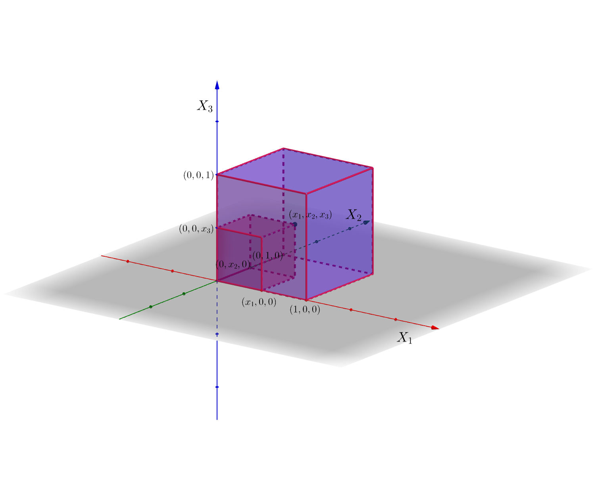
Seguimos en la planta “baja”,
- Si \(x_1 >1\) y \(0\leq x_2\leq 1\), \(([0,1]\times [0,1]\times [0,1])\cap ((-\infty,x_1]\times (-\infty,x_2]\times (-\infty,x_3])=[0,1]\times [0,x_2]\times [0,x_3]\), ver figura adjunta. Hemos dibujado sólo la parte “positiva” de la región \((-\infty,x_1]\times (-\infty,x_2]\times (-\infty,x_3]\) ya que la parte “negativa” claramente no interseca con \([0,1]\times [0,1]\times [0,1]\) para no complicar demasiado la figura.
En este caso, \[ F_{X_1X_2X_3}(x_1,x_2,x_3)=\int_{0}^{1}\int_{0}^{x_2}\int_{0}^{x_3} 8 x_1 x_2 x_3 dx_1\, dx_2\ dx_3 = 8\left[\frac{x_1^2}{2}\right]_0^{1}\left[\frac{x_2^2}{2}\right]_0^{x_2}\left[\frac{x_3^2}{2}\right]_0^{x_3} = x_2^2 x_3^2. \]
- Si \(0\leq x_1\) y \(x_2>1\), sería un caso parecido al caso anterior pero “cambiando los papeles” de \(x_1\) y \(x_2\). Por tanto, \[ F_{X_1X_2X_3}(x_1,x_2,x_3)=x_1^2 x_3^2. \]

Seguimos en la planta “baja”,
- Si \(x_1>1\) y \(x_2>1\), \(([0,1]\times [0,1]\times [0,1])\cap ((-\infty,x_1]\times (-\infty,x_2]\times (-\infty,x_3])=[0,1]\times [0,1]\times [0,x_3]\), ver figura adjunta. También hemos dibujado sólo la parte “positiva” de la región \((-\infty,x_1]\times (-\infty,x_2]\times (-\infty,x_3]\) ya que la parte “negativa” claramente no interseca con \([0,1]\times [0,1]\times [0,1]\) para no complicar demasiado la figura.
En este caso, \[ F_{X_1X_2X_3}(x_1,x_2,x_3)=\int_{0}^{1}\int_{0}^{1}\int_{0}^{x_3} 8 x_1 x_2 x_3 dx_1\, dx_2\ dx_3 = 8\left[\frac{x_1^2}{2}\right]_0^{1}\left[\frac{x_2^2}{2}\right]_0^{1}\left[\frac{x_3^2}{2}\right]_0^{x_3} = x_3^2. \]

Supongamos ahora que \((x_1,x_2,x_3)\) está en el “primer piso” o \(x_3>1\). Aquí también vamos a distinguir 4 casos:
\(x_1 <0\) o \(x_2 <0\). En este caso, \(([0,1]\times [0,1]\times [0,1])\cap ((-\infty,x_1]\times (-\infty,x_2]\times (-\infty,x_3])=\emptyset\). Por tanto, \(F_{X_1X_2X_3}(x_1,x_2,x_3)=0\).
\(0\leq x_1\leq 1\) y \(0\leq x_2\leq 1\). En este caso: \(([0,1]\times [0,1]\times [0,1])\cap ((-\infty,x_1]\times (-\infty,x_2]\times (-\infty,x_3])=[0,x_1]\times [0,x_2]\times [0,1]\), ver figura adjunta.
En este caso, \[ F_{X_1X_2X_3}(x_1,x_2,x_3)=\int_{0}^{x_1}\int_{0}^{x_2}\int_{0}^{1} 8 x_1 x_2 x_3 dx_1\, dx_2\ dx_3 = 8\left[\frac{x_1^2}{2}\right]_0^{x_1}\left[\frac{x_2^2}{2}\right]_0^{x_2}\left[\frac{x_3^2}{2}\right]_0^{1} = x_1^2 x_2^2. \]
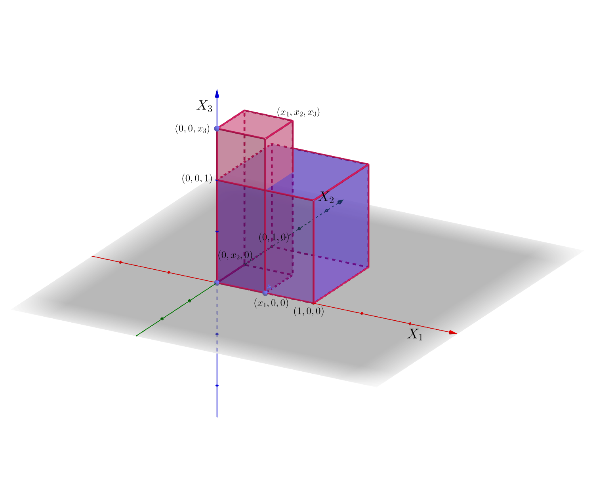
Seguimos en el “primer piso”,
- Si \(x_1 >1\) y \(0\leq x_2\leq 1\), \(([0,1]\times [0,1]\times [0,1])\cap ((-\infty,x_1]\times (-\infty,x_2]\times (-\infty,x_3])=[0,1]\times [0,x_2]\times [0,1]\), ver figura adjunta.
En este caso,
\[ F_{X_1X_2X_3}(x_1,x_2,x_3)=\int_{0}^{1}\int_{0}^{x_2}\int_{0}^{1} 8 x_1 x_2 x_3 dx_1\, dx_2\ dx_3 = 8\left[\frac{x_1^2}{2}\right]_0^{1}\left[\frac{x_2^2}{2}\right]_0^{x_2}\left[\frac{x_3^2}{2}\right]_0^{1} = x_2^2. \]
- Si \(0\leq x_1 \leq 1\) y $ x_2> 1$. Este caso sería parecido al caso anterior pero “cambiando los papeles” de \(x_1\) y \(x_2\). Por tanto, \[ F_{X_1X_2X_3}(x_1,x_2,x_3)=x_1^2. \]
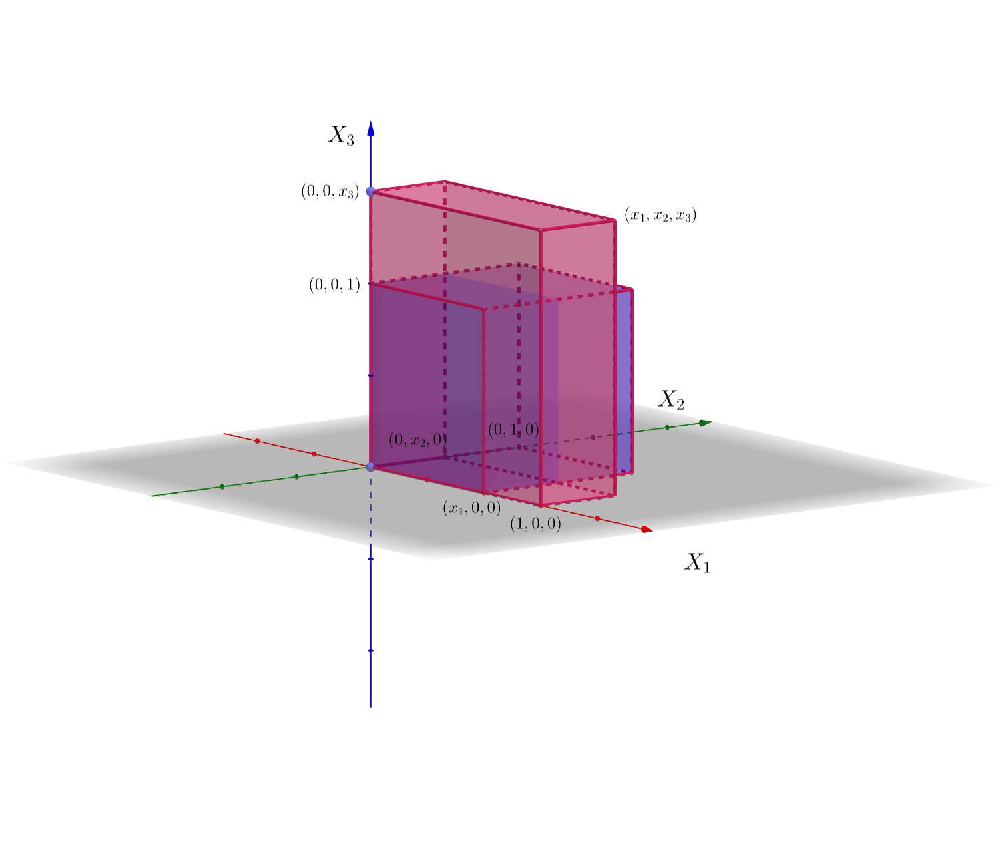
Seguimos en el “primer piso”,
- Si \(x_1>1\) y \(x_2>1\), \(([0,1]\times [0,1]\times [0,1])\cap ((-\infty,x_1]\times (-\infty,x_2]\times (-\infty,x_3])=[0,1]\times [0,1]\times [0,1]\), ver figura adjunta.
En este caso, \[ F_{X_1X_2X_3}(x_1,x_2,x_3)=\int_{0}^{1}\int_{0}^{1}\int_{0}^{1} 8 x_1 x_2 x_3 dx_1\, dx_2\ dx_3 = 8\left[\frac{x_1^2}{2}\right]_0^{1}\left[\frac{x_2^2}{2}\right]_0^{1}\left[\frac{x_3^2}{2}\right]_0^{1} = 1. \]
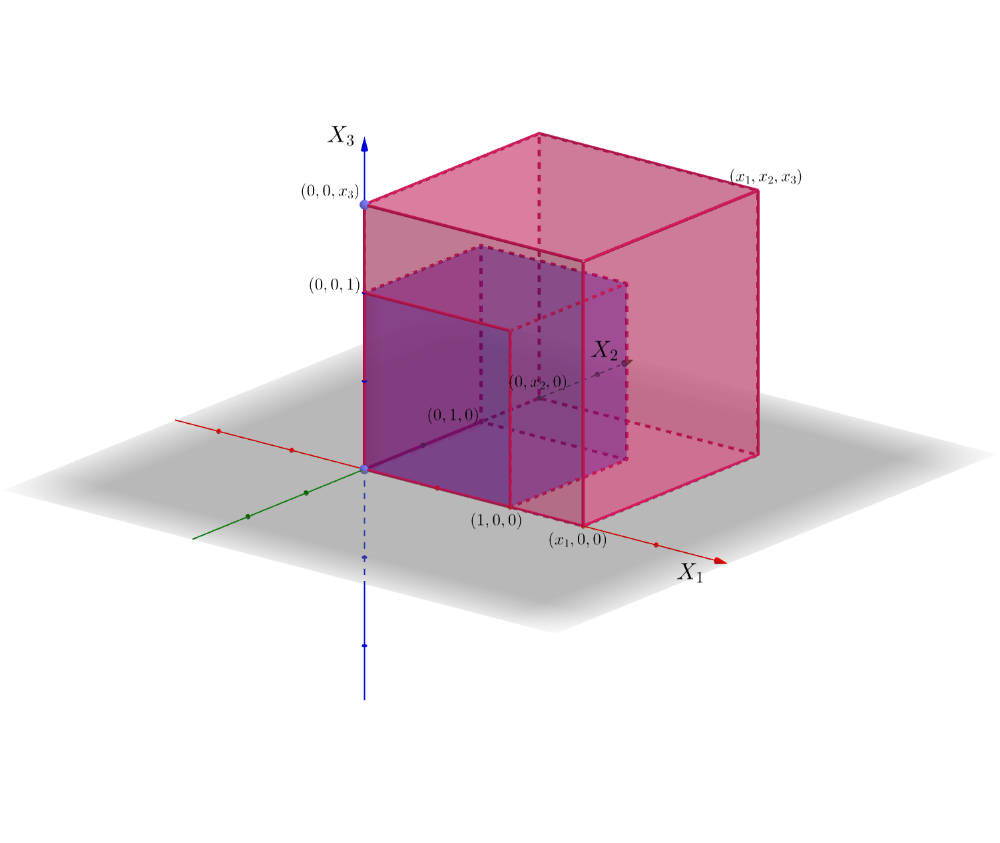
En resumen: \[ F_{X_1X_2X_3}(x_1,x_2,x_3)=\begin{cases} 0, & \mbox{si }x_1<0,\mbox{ o }x_2<0,\mbox{ o }x_3 <0\\ x_1^2\cdot x_2^2\cdot x_3^2, & \mbox{si }0\leq x_1\leq 1,\ 0\leq x_2\leq 1,\ 0\leq x_3\leq 1, \\ x_2^2\cdot x_3^2, & \mbox{si }x_1> 1,\ 0\leq x_2\leq 1,\ 0\leq x_3\leq 1, \\ x_1^2\cdot x_3^2, & \mbox{si }0\leq x_1\leq 1,\ x_2> 1,\ \ 0\leq x_3\leq 1, \\ x_3^2, & \mbox{si }x_1> 1,\ x_2> 1,\ \ 0\leq x_3\leq 1, \\ x_1^2\cdot x_2^2, & \mbox{si }0\leq x_1\leq 1,\ 0\leq x_2\leq 1,\ x_3> 1,\\ x_1^2, & \mbox{si }0\leq x_1\leq 1,\ x_2 > 1,\ x_3> 1,\\ x_2^2, & \mbox{si }x_1>1,\ 0\leq x_2\leq 1,\ x_3> 1,\\ 1, & \mbox{si }x_1\geq 1,\ x_2\geq 1,\ x_3\geq 1. \end{cases} \]
Dicha función era la función que nos sirvió como ejemplo a la hora de introducir la variables aleatorias \(n\)-dimensionales. Ahora sabemos que es continua y conocemos su función de densidad.
Comprobemos seguidamente que si derivamos tres veces la expresión de \(F_{X_1X_2X_3}\), primero respecto \(x_1\), luego respecto \(x_2\) y finalmente respecto \(x_3\), obtendremos la función de densidad \(f_{X_1X_2X_3}\).
Si derivamos respecto \(x_1\) obtenemos: \[ \frac{\partial F_{X_1X_2X_3}(x_1,x_2,x_3)}{\partial x_1}=\begin{cases} 0, & \mbox{si }x_1<0,\mbox{ o }x_2<0,\mbox{ o }x_3 <0\\ 2 x_1\cdot x_2^2\cdot x_3^2, & \mbox{si }0\leq x_1\leq 1,\ 0\leq x_2\leq 1,\ 0\leq x_3\leq 1, \\ 0, & \mbox{si }x_1> 1,\ 0\leq x_2\leq 1,\ 0\leq x_3\leq 1, \\ 2 x_1 \cdot x_3^2, & \mbox{si }0\leq x_1\leq 1,\ x_2> 1,\ \ 0\leq x_3\leq 1, \\ 0, & \mbox{si }x_1> 1,\ x_2> 1,\ \ 0\leq x_3\leq 1, \\ 2 x_1\cdot x_2^2, & \mbox{si }0\leq x_1\leq 1,\ 0\leq x_2\leq 1,\ x_3> 1,\\ 2 x_1, & \mbox{si }0\leq x_1\leq 1,\ x_2 > 1,\ x_3> 1,\\ 0, & \mbox{si }x_1>1,\ 0\leq x_2\leq 1,\ x_3> 1,\\ 0, & \mbox{si }x_1\geq 1,\ x_2\geq 1,\ x_3\geq 1. \end{cases} \]
Si ahora derivamos respecto \(x_2\) obtenemos: \[ \frac{\partial^2 F_{X_1X_2X_3}(x_1,x_2,x_3)}{\partial x_2\partial x_1}=\begin{cases} 0, & \mbox{si }x_1<0,\mbox{ o }x_2<0,\mbox{ o }x_3 <0\\ 4 x_1\cdot x_2\cdot x_3^2, & \mbox{si }0\leq x_1\leq 1,\ 0\leq x_2\leq 1,\ 0\leq x_3\leq 1, \\ 0, & \mbox{si }x_1> 1,\ 0\leq x_2\leq 1,\ 0\leq x_3\leq 1, \\ 0, & \mbox{si }0\leq x_1\leq 1,\ x_2> 1,\ \ 0\leq x_3\leq 1, \\ 0, & \mbox{si }x_1> 1,\ x_2> 1,\ \ 0\leq x_3\leq 1, \\ 4 x_1\cdot x_2, & \mbox{si }0\leq x_1\leq 1,\ 0\leq x_2\leq 1,\ x_3> 1,\\ 0, & \mbox{si }0\leq x_1\leq 1,\ x_2 > 1,\ x_3> 1,\\ 0, & \mbox{si }x_1>1,\ 0\leq x_2\leq 1,\ x_3> 1,\\ 0, & \mbox{si }x_1\geq 1,\ x_2\geq 1,\ x_3\geq 1. \end{cases} \]
Por último, si derivamos respecto \(x_3\), obtenemos: \[ \frac{\partial^3 F_{X_1X_2X_3}(x_1,x_2,x_3)}{\partial x_3\partial x_2\partial x_1}=\begin{cases} 0, & \mbox{si }x_1<0,\mbox{ o }x_2<0,\mbox{ o }x_3 <0\\ 8 x_1\cdot x_2\cdot x_3, & \mbox{si }0\leq x_1\leq 1,\ 0\leq x_2\leq 1,\ 0\leq x_3\leq 1, \\ 0, & \mbox{si }x_1> 1,\ 0\leq x_2\leq 1,\ 0\leq x_3\leq 1, \\ 0, & \mbox{si }0\leq x_1\leq 1,\ x_2> 1,\ \ 0\leq x_3\leq 1, \\ 0, & \mbox{si }x_1> 1,\ x_2> 1,\ \ 0\leq x_3\leq 1, \\ 0, & \mbox{si }0\leq x_1\leq 1,\ 0\leq x_2\leq 1,\ x_3> 1,\\ 0, & \mbox{si }0\leq x_1\leq 1,\ x_2 > 1,\ x_3> 1,\\ 0, & \mbox{si }x_1>1,\ 0\leq x_2\leq 1,\ x_3> 1,\\ 0, & \mbox{si }x_1\geq 1,\ x_2\geq 1,\ x_3\geq 1, \end{cases} \] expresión que coincide con la función de densidad \(f_{X_1X_2X_3}(x_1,x_2,x_3)\).
Acabemos el ejemplo calculando las funciones de densidad marginales de las variables \(X_1\), \(X_2\), \(X_3\), \((X_1,X_2)\), \((X_1,X_3)\), \((X_2,X_3)\).
Debido a la simetría de la región donde \(f_{X_1X_2X_3}(x_1,x_2,x_3)\) no se anula, es suficiente calcular la función de densidad marginal para las variables \(X_1\) y \((X_1,X_2)\). Para ver las demás, basta cambiar los “papeles” de las variables correspondientes. Por ejemplo, la función de densidad de la variable \(X_2\) será la misma que la de la variable \(X_1\) cambiando \(x_1\) por \(x_2\).
Para hallar la función de densidad de la variable \(X_1\), aplicamos la fórmula vista anteriormente: \[ f_{X_1}(x_1)=\int_{-\infty}^\infty\int_{-\infty}^\infty f_{X_1X_2X_3}(x_1,x_2,x_3)\, dx_2\, dx_3. \] Recordemos que la región donde no se anulaba la función de densidad conjunta \(f_{X_1X_2X_3}\) era el cubo \([0,1]\times [0,1]\times [0,1]\). Por tanto, fijado \(x_1\), el valor de \(f_{X_1}(x_1)\) será no nulo si el plano “vertical” \(X_1=x_1\) interseca dicho cubo. Y esto ocurre siempre que \(x_1\in (0,1)\). Por tanto, \[ f_{X_1}(x_1)=\begin{cases} \int_{0}^1\int_0^1 8 x_1x_2 x_3 \, dx_2\, dx_3=8x_1\left[\frac{x_2^2}{2}\right]_0^1 \left[\frac{x_3^2}{2}\right]_0^1 =2 x_1, & \mbox{ si }x_1\in (0,1),\\ 0, & \mbox{en caso contrario.} \end{cases} \]
Para hallar la función de densidad conjunta de la variable \((X_1,X_2)\), aplicamos la expresión siguiente: \[ f_{X_1X_2}(x_1,x_2)=\int_{-\infty}^\infty f_{X_1X_2X_3}(x_1,x_2,x_3)\, dx_3. \] En este caso, fijado \(x_1\) y \(x_2\), tenemos que ver cuando la recta “vertical” \(X_1=x_1\), \(X_2=x_2\) intersecta el cubo \([0,1]\times [0,1]\times [0,1]\) y esto ocurre siempre que \((x_1,x_2)\in [0,1]\times [0,1]\). Por tanto,
\[ f_{X_1X_2}(x_1,x_2)=\begin{cases} \int_{0}^1 8 x_1x_2 x_3 \, dx_3=8x_1x_2 \left[\frac{x_3^2}{2}\right]_0^1 =4 x_1 x_2, & \mbox{ si }(x_1,x_2)\in [0,1]\times [0,1],\\ 0, & \mbox{en caso contrario.} \end{cases} \]
6.4.3 La distribución gaussiana \(n\)-dimensional
Vamos a generalizar la distribución normal a \(n\) dimensiones.
De hecho la componente \((i,j)\) de la matriz de covarianzas \(\mathbf{\Sigma}\), \(\sigma_{ij}\) es la covarianza entre las variables \(X_i\) y \(X_j\).
Por tanto, los elementos de la diagonal de la matriz de covarianzas \(\mathbf{\Sigma}\), \(\sigma_{ii}\), serán las varianzas de las variables \(X_i\), \(i=1,\ldots,n\).
Propiedades de la función de densidad de la variable gaussiana \(n\)-dimensional:
Para cualquier punto \((x_1,\ldots,x_n)\in\mathbb{R}^n\), la función de densidad es no nula: \(f_{X_1\ldots X_n}(x_1,\ldots,x_n)>0\).
La función de densidad tiene un único máximo absoluto en el punto \(\mathbf{\mu}\) que vale \(f_{X_1\ldots X_n}(\mathbf{\mu})=\frac{1}{(2\pi)^{\frac{n}{2}}\sqrt{\mathbf{|\Sigma|}}}\).
Antes de estudiar cómo son las distribuciones de las marginales de una distribución normal \(n\)-dimensional, enunciemos el resultado siguiente:
Usando la proposición anterior, podemos afirmar:
Para ver la proposición anterior a partir de la proposición de la transformación afín, hagamos un ejemplo concreto:
Consideremos una variable normal \(5\)-dimensional de vector de medias general \(\mathbf{\mu}=(\mu_1,\mu_2,\mu_3,\mu_4,\mu_5)\) y matriz de covarianzas \[ \mathbf{\Sigma}=\begin{pmatrix} \sigma_{11} & \sigma_{12} & \sigma_{13} & \sigma_{14} & \sigma_{15} \\ \sigma_{21} & \sigma_{22} & \sigma_{23} & \sigma_{24} & \sigma_{25} \\ \sigma_{31} & \sigma_{32} & \sigma_{33} & \sigma_{34} & \sigma_{35} \\ \sigma_{41} & \sigma_{42} & \sigma_{43} & \sigma_{44} & \sigma_{45} \\ \sigma_{51} & \sigma_{52} & \sigma_{53} & \sigma_{54} & \sigma_{55} \end{pmatrix} \]
Queremos estudiar cuál es la distribución de la variable \(3\)-dimensional \((X_2,X_4,X_5)\). Para ello consideramos el vector \(\mathbf{c}=0\) y la matriz \(\mathbf{C}\) siguiente: \[ \mathbf{C}=\begin{pmatrix} 0 & 1 & 0 & 0 & 0 \\ 0 & 0 & 0 & 1 & 0 \\ 0 & 0 & 0 & 0 & 1 \\ \end{pmatrix} \] O sea, \(\mathbf{C}\) es una matriz \(3\times 5\) que vale 1 en los lugares \((1,2)\), \((2,4)\) y \((3,5)\). Fijémonos que las segundas componentes de los lugares anteriores son precisamente las componentes elegidas de la variable \(\mathbf{X}\).
La matriz \(\mathbf{Y}=\mathbf{C}\mathbf{X}=\begin{pmatrix}X_2\\X_4\\X_5\end{pmatrix}\) vale precisamente la variable marginal que queremos estudiar.
Aplicando la proposición de la transformación afín, podemos afirmar que la distribución de la variable \(\mathbf{Y}=\begin{pmatrix}X_2\\X_4\\X_5\end{pmatrix}\) es una normal \(3\) dimensional de vector de medias \(\mu_{\mathbf{Y}}=\mathbf{C}\mathbf{\mu}=\begin{pmatrix}\mu_2\\\mu_4\\\mu_5\end{pmatrix}\) y vector de covarianzas \[ \mathbf{\Sigma'}=\mathbf{C}\mathbf{\Sigma}\mathbf{C}^\top = \begin{pmatrix}\sigma_{22} & \sigma_{24} & \sigma_{25}\\ \sigma_{42} & \sigma_{44} & \sigma_{45} \\ \sigma_{52} & \sigma_{54} & \sigma_{55}\end{pmatrix}, \] tal como indica la última proposición sobre distribuciones marginales.
6.5 Independencia de variables aleatorias
6.5.1 Independencia de variables aleatorias discretas
La generalización de independencia a variables aleatorias \(n\)-dimensionales es clara:
o dicho de otra forma:
\[ P(X_1=x_{i_1},\ X_n=x_{i_n})=P(X_1=x_{i_1})\cdots P(X_n=x_{i_n}),\ i_1=1,2,\ldots,i_n=1,2,\ldots \]
Ejemplo del lanzamiento de un dado tres veces
Consideremos el experimento aleatorio que consiste en lanzar un dado tres veces.
Recordemos que hemos estudiado la variable aleatoria \((X_1,X_2,X_3)\) donde \(X_1\) nos daba el número de 1’s que han salido, \(X_2\), el número de 2’s y \(X_3\), el número de 3’s.
Las variables aleatorias anteriores no son independientes ya que, por ejemplo: \[ P_{X_1,X_2,X_3}(1,1,3)=0\neq P_{X_1}(1)\cdot P_{X_2}(1)\cdot P_{X_3}(3)=0.3472222\cdot 0.3472222\cdot 0.0046296=6\times 10^{-4}. \]
6.5.2 Independencia de variables aleatorias continuas
La definición dada para variables aleatorias discretas se traslada de forma natural a las variables aleatorias continuas:
Ejemplo
Recordemos el ejemplo siguiente visto donde teníamos una variable aleatoria \(3\)-dimensional continua \((X_1,X_2,X_3)\) con función de densidad conjunta: \[ f_{X_1X_2X_3}(x_1,x_2,x_3)=\begin{cases} 8 x_1\cdot x_2\cdot x_3, & \mbox{si }0\leq x_1\leq 1,\ 0\leq x_2\leq 1,\ 0\leq x_3\leq 1, \\ 0, & \mbox{en caso contrario.}\\ \end{cases} \] y con densidad marginales: \[ \begin{array}{rl} f_{X_1}(x_1) & =\begin{cases} 2x_1, & \mbox{ si }0\leq x\leq 1,\\ 0, & \mbox{en caso contrario.} \end{cases}\quad f_{X_2}(x_2)=\begin{cases} 2x_2, & \mbox{ si }0\leq x_2\leq 1,\\ 0, & \mbox{en caso contrario.} \end{cases}\\ f_{X_3}(x_3) & =\begin{cases} 2x_3, & \mbox{ si }0\leq x_3\leq 1,\\ 0, & \mbox{en caso contrario.} \end{cases} \end{array} \]
Veamos que son independientes.
Consideremos dos casos:
\((x_1,x_2,x_3)\in [0,1]\times [0,1]\times [0,1]\). En este caso: \[ f_{X_1X_2X_3}(x_1,x_2,x_3) =8 x_1 x_2 x_3 =2 x_1 2 x_2 2 x_3=f_{X_1}(x_1)\cdot f_{X_2}(x_2)\cdot f_{X_3}(x_3). \]
- \((x_1,x_2,x_3)\not\in [0,1]\times [0,1]\times [0,1]\). En este caso: \[ f_{X_1X_2X_3}(x_1,x_2,x_3) =0 = f_{X_1}(x_1)\cdot f_{X_2}(x_2)\cdot f_{X_3}(x_3), \] ya que si \((x_1,x_2,x_3)\not\in [0,1]\times [0,1]\times [0,1]\), o \(x_1\not\in [0,1]\) o \(x_2\not\in [0,1]\), o \(x_3\not\in [0,1]\). Por tanto \(f_{X_1}(x_1)=0\) o \(f_{X_2}(x_2)=0\) o \(f_{X_3}(x_3)=0\). En cualquier caso, \(f_{X_1}(x_1)\cdot f_{X_2}(x_2)\cdot f_{X_3}(x_3)=0\).
6.5.2.1 Ejemplo de la variable gaussiana \(n\)-dimensional
En este caso, recordemos que la función de densidad conjunta de \((X_1,\ldots,X_n)\) es: \[ \begin{array}{rl} & f_{X_1\ldots X_n}(x_1,\ldots,x_n)=\frac{1}{(2\pi)^{\frac{n}{2}}\sqrt{\mathbf{|\Sigma|}}}\mathrm{e}^{-\frac{1}{2}(\mathbf{x-\mu})^\top\mathbf{\Sigma}^{-1}(\mathbf{x-\mu})},\\ & \qquad -\infty <x_1,\ldots,x_n<\infty, \end{array} \] donde \(\mathbf{\mu}\) es el vector de medias y \(\mathbf{\Sigma}\), la matriz de covarianzas.
Recordemos también que las funciones de densidad marginales de \(X_1,\ldots, X_n\) correspondían a \(N(\mu_i,\sigma_{ii})\), con \(i=1,\ldots, n\): \[ f_{X_i}(x_i) =\frac{1}{\sqrt{2\pi\sigma_{ii}^2}}\mathrm{e}^{-\frac{(x_i-\mu_i)^2}{2\sigma_{ii}^2}},\ -\infty <x_i<\infty,\ i=1,\ldots,n. \]
¿Cómo tiene que ser la matriz de covarianzas \(\mathbf{\Sigma}\) para que las variables \(X_1,\ldots,X_n\) sean independientes?
O, expresado matemáticamente, \[ \begin{array}{rl} f_{X_1}(x_1)\cdots f_{X_n}(x_n) & =\frac{1}{\left(2\pi\right)^{\frac{n}{2}}\sigma_{11}\cdots \sigma_{nn}}\mathrm{e}^{-\sum\limits_{i=1}^n\frac{(x_i-\mu_i)^2}{2\sigma_{ii}^2}}=f_{X_1\ldots X_n}(x_1,\ldots,x_n) \\ & =\frac{1}{(2\pi)^{\frac{n}{2}}\sqrt{\mathbf{|\Sigma|}}}\mathrm{e}^{-\frac{1}{2}(\mathbf{x-\mu})^\top\mathbf{\Sigma}^{-1}(\mathbf{x-\mu})}. \end{array} \]
La respuesta es claramente cuando la matriz de covarianzas \(\mathbf{\Sigma}\) es diagonal, o sea, si \(\sigma_{ij}=0,\) para \(i\neq j\), para todo \(i,j=1,\ldots,n\).
En resumen, cuando la covarianza entre dos variables cualesquiera \(X_i\) y \(X_j\) distintas es cero, las variables normales \(X_1,\ldots,X_n\) son independientes.
6.5.3 Relación de la independencia y la función de distribución
El siguiente resultado nos da la relación entre la independencia de variables aleatorias y su función de distribución conjunta:
6.5.3.1 Ejemplos
Ejemplo
Recordemos la variable aleatoria \(3\)-dimensional continua con función de densidad conjunta: \[ f_{X_1X_2X_3}(x_1,x_2,x_3)=\begin{cases} 8 x_1\cdot x_2\cdot x_3, & \mbox{si }0\leq x_1\leq 1,\ 0\leq x_2\leq 1,\ 0\leq x_3\leq 1, \\ 0, & \mbox{en caso contrario.}\\ \end{cases} \] Recordemos también función de distribución conjunta es: \[ F_{X_1X_2X_3}(x_1,x_2,x_3)=\begin{cases} 0, & \mbox{si }x_1<0,\mbox{ o }x_2<0,\mbox{ o }x_3 <0\\ x_1^2\cdot x_2^2\cdot x_3^2, & \mbox{si }0\leq x_1\leq 1,\ 0\leq x_2\leq 1,\ 0\leq x_3\leq 1, \\ x_2^2\cdot x_3^2, & \mbox{si }x_1> 1,\ 0\leq x_2\leq 1,\ 0\leq x_3\leq 1, \\ x_1^2\cdot x_3^2, & \mbox{si }0\leq x_1\leq 1,\ x_2> 1,\ \ 0\leq x_3\leq 1, \\ x_3^2, & \mbox{si }x_1> 1,\ x_2> 1,\ \ 0\leq x_3\leq 1, \\ x_1^2\cdot x_2^2, & \mbox{si }0\leq x_1\leq 1,\ 0\leq x_2\leq 1,\ x_3> 1,\\ x_1^2, & \mbox{si }0\leq x_1\leq 1,\ x_2 > 1,\ x_3> 1,\\ x_2^2, & \mbox{si }x_1>1,\ 0\leq x_2\leq 1,\ x_3> 1,\\ 1, & \mbox{si }x_1\geq 1,\ x_2\geq 1,\ x_3\geq 1. \end{cases} \]
Recordemos las funciones de densidad de las distribuciones marginales:
\[ \begin{array}{rl} f_{X_1}(x_1) & =\begin{cases} 2x_1, & \mbox{ si }0\leq x\leq 1,\\ 0, & \mbox{en caso contrario.} \end{cases}\\ f_{X_2}(x_2)&=\begin{cases} 2x_2, & \mbox{ si }0\leq x_2\leq 1,\\ 0, & \mbox{en caso contrario.} \end{cases}\\ f_{X_3}(x_3) & =\begin{cases} 2x_3, & \mbox{ si }0\leq x_3\leq 1,\\ 0, & \mbox{en caso contrario.} \end{cases} \end{array} \] Dejamos como ejercicio verificar que las expresiones siguientes correspondes a las funciones de distribución marginales:
\[ \begin{array}{rl} F_{X_1}(x_1) & =\begin{cases} 0, & \mbox{ si }x_1<0, \\ x_1^2, & \mbox{ si }0\leq x_1\leq 1,\\ 1, & \mbox{ si }x_1 > 1. \end{cases}\\ F_{X_2}(x_2) & =\begin{cases} 0, & \mbox{ si }x_2<0, \\ x_2^2, & \mbox{ si }0\leq x_2\leq 1,\\ 1, & \mbox{ si }x_2 > 1. \end{cases}\\ F_{X_3}(x_3) & =\begin{cases} 0, & \mbox{ si }x_3<0, \\ x_3^2, & \mbox{ si }0\leq x_3\leq 1,\\ 1, & \mbox{ si }x_3 > 1. \end{cases} \end{array} \]
Recordemos que \(X_1\), \(X_2\) y \(X_3\) son independientes. Por tanto verifiquemos que \(F_{X_1X_2X_3}(x_1,x_2,x_3)=F_{X_1}(x_1)\cdot F_{X_2}(x_2)\cdot F_{X_3}(x_3)\) para todos los valores \(x_1,x_2,x_3\in\mathbb{R}\).
Distingamos los mismos casos que en la función de distribución conjunta:
\(x_1<0\), o \(x_2<0\), o \(x_3 <0\). En este caso, o \(F_{X_1}(x_1)=0\), o \(F_{X_2}(x_2)=0\) o \(F_{X_3}(x_3)=0\). En cualquier caso: \[ F_{X_1X_2X_3}(x_1,x_2,x_3)=0= F_{X_1}(x_1)\cdot F_{X_2}(x_2)\cdot F_{X_3}(x_3). \]
\(0\leq x_1\leq 1\), y \(0\leq x_2\leq 1\), y \(0\leq x_3\leq 1\). En este caso: \[ F_{X_1X_2X_3}(x_1,x_2,x_3)=x_1^2\cdot x_2^2\cdot x_3^2= F_{X_1}(x_1)\cdot F_{X_2}(x_2)\cdot F_{X_3}(x_3). \]
\(x_1> 1\), y \(0\leq x_2\leq 1\), y \(0\leq x_3\leq 1\). En este caso: \[ F_{X_1X_2X_3}(x_1,x_2,x_3)=x_2^2\cdot x_3^2=1\cdot x_2^2\cdot x_3^2= F_{X_1}(x_1)\cdot F_{X_2}(x_2)\cdot F_{X_3}(x_3). \]
\(0\leq x_1\leq 1,\) y \(x_2> 1\), y \(0\leq x_3\leq 1\). En este caso: \[ F_{X_1X_2X_3}(x_1,x_2,x_3)=x_1^2\cdot x_3^2=x_1^2\cdot 1\cdot x_3^2= F_{X_1}(x_1)\cdot F_{X_2}(x_2)\cdot F_{X_3}(x_3). \]
\(x_1> 1\), y \(x_2> 1\), y \(0\leq x_3\leq 1\). En este caso: \[ F_{X_1X_2X_3}(x_1,x_2,x_3)=x_3^2=1\cdot 1\cdot x_3^2= F_{X_1}(x_1)\cdot F_{X_2}(x_2)\cdot F_{X_3}(x_3). \]
\(0\leq x_1\leq 1\), y \(0\leq x_2\leq 1\), y \(x_3> 1\). En este caso: \[ F_{X_1X_2X_3}(x_1,x_2,x_3)=x_1^2\cdot x_2^2=x_1^2\cdot x_2^2\cdot 1= F_{X_1}(x_1)\cdot F_{X_2}(x_2)\cdot F_{X_3}(x_3). \]
\(0\leq x_1\leq 1\), y \(x_2 > 1\), y \(x_3> 1\). En este caso: \[ F_{X_1X_2X_3}(x_1,x_2,x_3)=x_1^2=x_1^2\cdot 1\cdot 1= F_{X_1}(x_1)\cdot F_{X_2}(x_2)\cdot F_{X_3}(x_3). \]
\(x_1> 1\), y \(0\leq x_2 \leq 1\), y \(x_3> 1\). En este caso: \[ F_{X_1X_2X_3}(x_1,x_2,x_3)=x_2^2=1\cdot x_2^2\cdot 1= F_{X_1}(x_1)\cdot F_{X_2}(x_2)\cdot F_{X_3}(x_3). \]
- \(x_1> 1\), y \(x_2>1\), y \(x_3> 1\). En este caso: \[ F_{X_1X_2X_3}(x_1,x_2,x_3)=1=1\cdot 1\cdot 1= F_{X_1}(x_1)\cdot F_{X_2}(x_2)\cdot F_{X_3}(x_3). \]
6.6 Momentos conjuntos y valores esperados conjuntos
6.6.1 Valor esperado de una función de \(n\) variables aleatorias
Sea \((X_1,\ldots,X_n)\) una variable aleatoria \(n\)-dimensional.
Sea \(P_{X_1\ldots X_n}\) su función de probabilidad conjunta en el caso en que \((X_1,\ldots,X_n)\) sea discreta y \(f_{X_1\ldots X_n}\) su función de densidad conjunta en el caso en que \((X_1,\ldots,X_n)\) sea continua.
Sea \(Z=g(X_1,\ldots,X_n)\) una variable aleatoria unidimensional función de las variables \(X_1,\ldots,X_n\). Por ejemplo:
- Media aritmética de las \(n\) variables \(g(x_1,\ldots,x_n)=\frac{x_1+\cdots + x_n}{n}\): \(Z=\frac{X_1+\cdots +X_n}{n}\).
- Media geométrica de las \(n\) variables \(g(x_1,\ldots,x_n)=\sqrt[n]{x_1\cdots x_n}\): \(Z=\sqrt[n]{X_1\cdots X_n}\).
- Suma de los cuadrados de las variables \(g(x_1,\ldots,x_n)=x_1^2+\cdots +x_n^2\): \(Z=X_1^2+\cdots +X_n^2\).
Hay que tener en cuenta que \(Z\), como variable aleatoria unidimensional tiene una función de probabilidad \(P_Z\) en el caso en que \((X_1,\ldots,X_n)\) sea discreta y una función de densidad \(f_Z\) en el caso en que \((X_1,\ldots,X_n)\) sea continua.
El siguiente resultado nos dice cómo calcular el valor esperado de \(Z\) sin tener que calcular \(P_Z\) o \(f_Z\), sólo usando la información de la variable aleatoria conjunta \((X_1,\ldots,X_n)\):
en el caso en que \((X_1,\ldots,X_n)\) sea discreta con \((X_1,\ldots,X_n)(\Omega)=\{(x_{i_1},\ldots,x_{i_n}),\ i_1=1,2,\ldots, i_n=1,2,\ldots\}\), \[ E(Z) = E(g(X_1\ldots,X_n)) =\sum_{x_{i_1}}\cdots\sum_{x_{i_n}}g(x_{i_1},\ldots,x_{i_n})P(x_{i_1},\ldots,x_{i_n}), \]
en el caso en que \((X_1,\ldots,X_n)\) sea continua: \[ \begin{array}{rl} & E(Z)=E(g(X_1\ldots,X_n)) \\ & \quad =\int_{-\infty}^\infty\cdots\int_{-\infty}^\infty g(x_1,\ldots,x_n)f_{X_1\ldots X_n}(x_1,\ldots,x_n)\, dx_1\ldots dx_n. \end{array} \]
6.6.2 Ejemplos
Ejemplo del lanzamiento de un dado tres veces
Consideremos el ejemplo de la variable \((X_1,X_2,X_3)\) que nos daba el número de 1’s, 2’s y 3’s en el lanzamiento de un dado tres veces.
Vamos a calcular \(E\left(X_1\cdot X_2\cdot X_3\right)\).
El valor esperado anterior se calcularía de la forma siguiente:
\[
E\left(X_1\cdot X_2\cdot X_3\right)=\sum_{i_1=0}^3\sum_{i_2=0}^3
\sum_{i_3=0}^3 i_1\cdot i_2\cdot i_3\cdot P_{X_1X_2X_3}(i_1,i_2,i_3),
\]
en total \(4^3=64\) términos. Como el cálculo es tedioso, lo vamos a realizar con ayuda de R.
valor.esperado=0;
for (i1 in 0:3){
for (i2 in 0:3){
for (i3 in 0:3){
valor.esperado=valor.esperado+i1*i2*i3*fun.prob.con(i1,i2,i3)
}
}
}
valor.esperado## [1] 0.02777778Ejemplo
Recordemos la variable aleatoria \(3\)-dimensional \((X_1,X_2,X_3)\) con función de densidad conjunta: \[ f_{X_1X_2X_3}(x_1,x_2,x_3)=\begin{cases} 8 x_1\cdot x_2\cdot x_3, & \mbox{si }0\leq x_1\leq 1,\ 0\leq x_2\leq 1,\ 0\leq x_3\leq 1, \\ 0, & \mbox{en caso contrario.}\\ \end{cases} \] Calculemos \(E(X_1^2+X_2^2+X_3^2)\): \[ \begin{array}{rl} E(X_1^2+X_2^2+X_3^2) & =\int_{x_1=0}^{x_1=1} \int_{x_2=0}^{x_2=1}\int_{x_3=0}^{x_3=1} (x_1^2+x_2^2+x_3^2) 8 x_1 x_2 x_3 \,dx_1\, dx_2\, dx_3\\ & =8\left(\int_{x_1=0}^{x_1=1} \int_{x_2=0}^{x_2=1}\int_{x_3=0}^{x_3=1} x_1^3 x_2 x_3 \,dx_1\, dx_2\, dx_3 + \int_{x_1=0}^{x_1=1} \int_{x_2=0}^{x_2=1}\int_{x_3=0}^{x_3=1} x_1 x_2^3 x_3 \,dx_1\, dx_2\, dx_3 \right.\\ & \left. + \int_{x_1=0}^{x_1=1} \int_{x_2=0}^{x_2=1}\int_{x_3=0}^{x_3=1} x_1 x_2 x_3^3 \,dx_1\, dx_2\, dx_3\right) \\ & = 8\left(\left[\frac{x_1^4}{4}\right]_0^1 \left[\frac{x_2^2}{2}\right]_0^1 \left[\frac{x_3^2}{2}\right]_0^1 + \left[\frac{x_1^2}{2}\right]_0^1 \left[\frac{x_2^4}{4}\right]_0^1 \left[\frac{x_3^2}{2}\right]_0^1 + \left[\frac{x_1^2}{2}\right]_0^1 \left[\frac{x_2^2}{2}\right]_0^1 \left[\frac{x_3^4}{4}\right]_0^1\right) \\ & =8\cdot 3\cdot \frac{1}{16}=\frac{3}{2}=1.5. \end{array} \]
6.6.3 Propiedad del valor esperado de la suma de variables
En estos momentos estamos en condiciones de demostrar el resultado siguiente:
Demostración
Haremos la demostración para el caso continuo. Dejamos como ejercicio la demostración en el caso discreto.
El valor esperado de la suma de variables será en función de la función de densidad conjunta \(f_{X_1\ldots X_n}\): \[ \begin{array}{rl} E(X_1+\cdots + X_n) & = \int_{-\infty}^\infty\cdots\int_{-\infty}^\infty (x_1+\cdots + x_n)f_{X_1\ldots X_n}(x_1,\ldots,x_n)\,dx_1\ldots dx_n \\ & = \int_{-\infty}^\infty\cdots\int_{-\infty}^\infty x_1f_{X_1\ldots X_n}(x_1,\ldots,x_n)\,dx_1\ldots dx_n+ \cdots \\ & + \int_{-\infty}^\infty\cdots\int_{-\infty}^\infty x_n f_{X_1\ldots X_n}(x_1,\ldots,x_n)\,dx_1\ldots dx_n \\ & = E(X_1)+\cdots + E(X_n). \end{array} \]
6.6.3.1 Ejemplos
Ejemplo del lanzamiento de un dado tres veces
Consideremos el ejemplo de la variable \((X_1,X_2,X_3)\) que nos daba el número de 1’s, 2’s y 3’s en el lanzamiento de un dado tres veces.
Comprobemos en este caso que \(E(X_1+X_2+X_3)=E(X_1)+E(X_2)+E(X_3)\).
Calculemos \(E(X_1+X_2+X_3)\) con R usando la misma técnica que en el ejemplo donde calculábamos \(E(X_1\cdot X_2\cdot X_3)\):
valor.esperado=0;
for (i1 in 0:3){
for (i2 in 0:3){
for (i3 in 0:3){
valor.esperado=valor.esperado+(i1+i2+i3)*fun.prob.con(i1,i2,i3)
}
}
}
valor.esperado## [1] 1.5La distribución marginal de cada una de las variables \(X_1\), \(X_2\) y \(X_3\) recordemos que es la siguiente:
| \(X_1\) | 0 | 1 | 2 | 3 |
|---|---|---|---|---|
| \(P_{X_1}\) | \(0.5787\) | \(0.3472\) | \(0.0694\) | \(0.0046\) |
El valor de \(E(X_1)=E(X_2)=E(X_3)\) será:
## [1] 0.5Claramente: \[ E(X_1+X_2+X_3)=1.5=E(X_1)+E(X_2)+E(X_3)=0.5+0.5+0.5. \]
6.6.4 Valor esperado de una función de \(n\) variables aleatorias independientes
El siguiente resultado nos simplifica el cálculo del valor esperado de una función de \(n\) variables aleatorias en el caso en que sean independientes:
O sea, el cálculo de \(E(g(X_1\ldots,X_n))\) que sería una suma múltiple en el caso de que \((X_1,\ldots,X_n)\) sea discreta o una integral múltiple en el caso en que \((X_1,\ldots,X_n)\) sea continua se transforma en el producto de \(n\) sumas simples (caso discreto) o el producto de \(n\) integrales simples (caso continuo): \[ \begin{array}{rl} E(Z) & =E(g(X_1\ldots,X_n))\\ & =\left(\sum_{x_{i_1}} g_1(x_{i_1})\cdot P_{X_1}(x_{i_1})\right)\cdots \left(\sum_{x_{i_n}} g_n(x_{i_n})\cdot P_{X_n}(x_{i_n})\right), \ \mbox{caso discreto},\\ E(Z) & =E(g(X_1\ldots,X_n)) \\ & =\left(\int_{-\infty}^\infty g_1(x_1)\cdot f_{X_1}(x_1)\, dx_1\right)\cdots \left(\int_{-\infty}^\infty g_n(x_n)\cdot f_{X_n}(x_n)\right), \ \mbox{caso continuo}. \end{array} \]
Un caso particular de aplicación de la proposición anterior sería cuando queramos calcular \(E(X_1\cdots X_n)\). En este caso \(g(x_1,\ldots,x_n)=x_1\cdots x_n\), \(g_1(x_1)=x_1\), y \(g_n(x_n)=x_n\).
Podemos escribir, por tanto: \[ E(X_1\cdots X_n)=E_{X_1}(X_1)\cdots E_{X_n}(X_n), \] si \(X_1,\ldots,X_n\) son independientes.
6.6.4.1 Ejemplos
Recordemos el ejemplo con función de densidad conjunta: \[ f_{X_1X_2X_3}(x_1,x_2,x_3)=\begin{cases} 8 x_1\cdot x_2\cdot x_3, & \mbox{si }0\leq x_1\leq 1,\ 0\leq x_2\leq 1,\ 0\leq x_3\leq 1, \\ 0, & \mbox{en caso contrario.}\\ \end{cases} \] Recordemos que son independientes. Comprobemos que \(E(X_1\cdot X_2\cdot X_3)=E(X_1)\cdot E(X_2)\cdot E(X_3)\).
Calculemos \(E(X_1\cdot X_2\cdot X_3)\): \[ \begin{array}{rl} E(X_1\cdot X_2\cdot X_3) & = \int_0^1\int_0^1\int_0^1 x_1\cdot x_2\cdot x_3\cdot 8 x_1\cdot x_2\cdot x_3\,dx_1\, dx_2\, dx_3 \\ & = 8\int_0^1\int_0^1\int_0^1 x_1^2\cdot x_2^2\cdot x_3^2\,dx_1\, dx_2\, dx_3 =8\left[\frac{x_1^3}{3}\right]_0^1\left[\frac{x_2^3}{3}\right]_0^1 \left[\frac{x_3^3}{3}\right]_0^1 = 8\cdot \frac{1}{3^3}=\frac{8}{27}=0.2963. \end{array} \]
Recordemos que las densidades marginales eran: \[ \begin{array}{rl} f_{X_1}(x_1) & =\begin{cases} 2x_1, & \mbox{ si }0\leq x\leq 1,\\ 0, & \mbox{en caso contrario.} \end{cases}\quad f_{X_2}(x_2)=\begin{cases} 2x_2, & \mbox{ si }0\leq x_2\leq 1,\\ 0, & \mbox{en caso contrario.} \end{cases}\\ f_{X_3}(x_3) & =\begin{cases} 2x_3, & \mbox{ si }0\leq x_3\leq 1,\\ 0, & \mbox{en caso contrario.} \end{cases} \end{array} \]
Por tanto: \[ E(X_1)=E(X_2)=E(X_3)=\int_0^1 x\cdot 2 x\, dx =2 \int_0^1 x^2\, dx=2\left[\frac{x^3}{3}\right]_0^1=\frac{2}{3}. \] Claramente, se verifica: \[ E(X_1\cdot X_2\cdot X_3)=\frac{8}{27}=E(X_1)\cdot E(X_2)\cdot E(X_3)=\left(\frac{2}{3}\right)^3. \]
6.6.5 Propiedades de la covarianza
Veamos cómo se calcula la covarianza de dos combinaciones lineales de variables aleatorias:
Demostración
Usando la expresión de la covarianza podemos calcular la covarianza entre las variables \(U\) y \(V\) como: \[ \begin{array}{rl} \mathrm{Cov}(U,V) & =E(UV)-E(U)E(V)=E\left(\sum\limits_{i=1}^n a_i X_i\cdot \sum\limits_{j=1}^n b_j Y_j\right)- E\left(\sum\limits_{i=1}^n a_i X_i\right)E\left(\sum\limits_{j=1}^n b_j Y_j\right) \\ & =\sum\limits_{i=1}^n \sum\limits_{j=1}^n a_i b_j E\left(X_i Y_j\right)-\sum\limits_{i=1}^n a_i E(X_i)\sum\limits_{j=1}^n b_j E(Y_j) = \sum\limits_{i=1}^n \sum\limits_{j=1}^n a_i b_j E\left(X_i Y_j\right)-\sum\limits_{i=1}^n\sum\limits_{j=1}^n a_i b_j E(X_i) E(Y_j) \\ & = \sum\limits_{i=1}^n \sum\limits_{j=1}^n a_i b_j \left(E\left(X_i Y_j\right) - E(X_i) E(Y_j)\right) = \sum\limits_{i=1}^n \sum\limits_{j=1}^n a_i b_j \mathrm{Cov}(X_i,Y_j), \end{array} \] tal como queríamos ver.
Si en la combinación lineal sólo hay las componentes de una sola variable aleatoria \(n\)-dimensional, la proposición anterior se convierte en la proposición siguiente:
Demostración
Usando la misma técnica de demostración que en la proposición anterior, podemos calcular la covarianza entre las variables \(U\) y \(V\) como: \[ \begin{array}{rl} \mathrm{Cov}(U,V) & = \sum\limits_{i=1}^n \sum\limits_{j=1}^n a_i b_j \left(E\left(X_i X_j\right) - E(X_i) E(X_j)\right) = \sum\limits_{i=1}^n a_i b_i \left(E\left(X_i^2\right) - E(X_i)^2\right)+\sum\limits_{i=1}^n \sum\limits_{j=1,j\neq i}^n a_i b_j \mathrm{Cov}(X_i,X_j) \\ & = \sum\limits_{i=1}^n a_i b_i \mathrm{Var}(X_i)+\sum\limits_{i=1}^n \sum\limits_{j=1,j\neq i}^n a_i b_j \mathrm{Cov}(X_i,X_j), \end{array} \] tal como queríamos ver.
Como, en general \(\mathrm{Var}(U)=\mathrm{Cov}(U,U)\), una consecuencia directa de la proposición anterior es la expresión de la varianza de una combinación lineal de variables aleatorias:
Demostración
Para la demostración, basta tener en cuenta que \(\mathrm{Var}(U)=\mathrm{Cov}(U,U)\) y aplicar la expresión de la covariancia entre \(U\) y \(V\) en la proposición que nos da la covarianza de una combinación lineal de variables aleatorias.
Una consecuencia de la proposición anterior es que si las variables son independientes, la varianza de la suma es la suma de varianzas:
Entonces la varianza de la variable \(X_1+\cdots X_n\) es la suma de las varianzas de cada variable aleatoria:
\[
\mathrm{Var}(X_1+\cdots + X_n)=\sum_{i=1}^n \mathrm{Var}(X_i).
\]
Demostración
Para la demostración, basta aplicar la proposición anterior de la varianza de una combinación lineal de variables aleatorias con \(a_i=1\), para todo \(i=1,\ldots,n\) y tener en cuenta que como son independientes, \(\mathrm{Cov}(X_i,X_j)=0\), para todo \(i\neq j\).